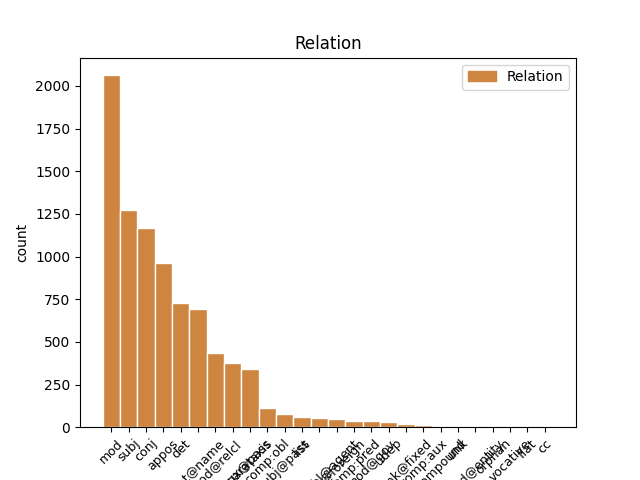
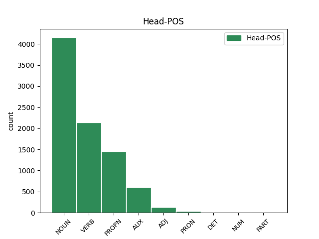
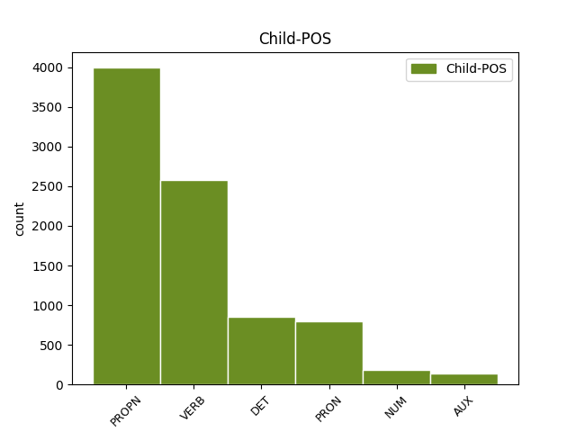

Distribution of features within this leaf



Agreement Rules sorted by frequency.
- When the dependent token is the appositional modifier(appos) of the head token, and the dependent token is PROPN.
1 По _ _ _ _ 0 _ _ _
2 старому _ _ _ _ 0 _ _ _
3 административному _ _ _ _ 0 _ _ _
4 делению _ _ _ _ 0 _ _ _
5 входил _ _ _ _ 0 _ _ _
6 в _ _ _ _ 0 _ _ _
7 провинцию провинция NOUN NN Animacy=Inan|Case=Acc|Gender=Fem|Number=Sing 0 _ _ _
8 Бейра Бейра PROPN NNP Animacy=Inan|Case=Nom|Gender=Fem|Number=Sing 7 appos _ SpaceAfter=No
9 - _ _ _ _ 0 _ _ _
10 Байша _ _ _ _ 0 _ _ _
11 . _ _ _ _ 0 _ _ _
1 Он _ _ _ _ 0 _ _ _
2 часто _ _ _ _ 0 _ _ _
3 заявляет _ _ _ _ 0 _ _ _
4 про _ _ _ _ 0 _ _ _
5 заговоры _ _ _ _ 0 _ _ _
6 феминисток _ _ _ _ 0 _ _ _
7 , _ _ _ _ 0 _ _ _
8 утверждая _ _ _ _ 0 _ _ _
9 , _ _ _ _ 0 _ _ _
10 что _ _ _ _ 0 _ _ _
11 последние _ _ _ _ 0 _ _ _
12 -- _ _ _ _ 0 _ _ _
13 воплощение воплощение NOUN NN Animacy=Inan|Case=Nom|Gender=Neut|Number=Sing 0 _ _ _
14 зла _ _ _ _ 0 _ _ _
15 , _ _ _ _ 0 _ _ _
16 стремящееся стремиться VERB VBNL Animacy=Inan|Aspect=Imp|Case=Nom|Gender=Neut|Number=Sing|Tense=Pres|VerbForm=Part|Voice=Act 13 mod _ _
17 править _ _ _ _ 0 _ _ _
18 миром _ _ _ _ 0 _ _ _
19 ( _ _ _ _ 0 _ _ _
20 впоследствии _ _ _ _ 0 _ _ _
21 выясняется _ _ _ _ 0 _ _ _
22 , _ _ _ _ 0 _ _ _
23 что _ _ _ _ 0 _ _ _
24 этим _ _ _ _ 0 _ _ _
25 он _ _ _ _ 0 _ _ _
26 объясняет _ _ _ _ 0 _ _ _
27 свою _ _ _ _ 0 _ _ _
28 усталость _ _ _ _ 0 _ _ _
29 после _ _ _ _ 0 _ _ _
30 близости _ _ _ _ 0 _ _ _
31 со _ _ _ _ 0 _ _ _
32 своей _ _ _ _ 0 _ _ _
33 бывшей _ _ _ _ 0 _ _ _
34 девушкой _ _ _ _ 0 _ _ _
35 за _ _ _ _ 0 _ _ _
36 год _ _ _ _ 0 _ _ _
37 до _ _ _ _ 0 _ _ _
38 основного _ _ _ _ 0 _ _ _
39 сюжета _ _ _ _ 0 _ _ _
40 ) _ _ _ _ 0 _ _ _
41 , _ _ _ _ 0 _ _ _
42 и _ _ _ _ 0 _ _ _
43 прочие _ _ _ _ 0 _ _ _
44 бессмысленности _ _ _ _ 0 _ _ _
45 , _ _ _ _ 0 _ _ _
46 возможно _ _ _ _ 0 _ _ _
47 , _ _ _ _ 0 _ _ _
48 соревнуясь _ _ _ _ 0 _ _ _
49 с _ _ _ _ 0 _ _ _
50 Рин _ _ _ _ 0 _ _ _
51 в _ _ _ _ 0 _ _ _
52 `` _ _ _ _ 0 _ _ _
53 исключительности _ _ _ _ 0 _ _ _
54 '' _ _ _ _ 0 _ _ _
55 . _ _ _ _ 0 _ _ _
1 Контролируемый _ _ _ _ 0 _ _ _
2 интерфейсом _ _ _ _ 0 _ _ _
3 захвата _ _ _ _ 0 _ _ _
4 движения _ _ _ _ 0 _ _ _
5 , _ _ _ _ 0 _ _ _
6 Geminoid _ _ _ _ 0 _ _ _
7 HI _ _ _ _ 0 _ _ _
8 - _ _ _ _ 0 _ _ _
9 1 _ _ _ _ 0 _ _ _
10 Может _ _ _ _ 0 _ _ _
11 имитировать _ _ _ _ 0 _ _ _
12 тело тело NOUN NN Animacy=Inan|Case=Acc|Gender=Neut|Number=Sing 0 _ _ _
13 Исигуро Исигуро PROPN NNP Animacy=Anim|Case=Gen|Gender=Masc|Number=Sing 12 mod _ _
14 и _ _ _ _ 0 _ _ _
15 мимикой _ _ _ _ 0 _ _ _
16 , _ _ _ _ 0 _ _ _
17 и _ _ _ _ 0 _ _ _
18 он _ _ _ _ 0 _ _ _
19 может _ _ _ _ 0 _ _ _
20 воспроизводить _ _ _ _ 0 _ _ _
21 голос _ _ _ _ 0 _ _ _
22 синхронно _ _ _ _ 0 _ _ _
23 с _ _ _ _ 0 _ _ _
24 его _ _ _ _ 0 _ _ _
25 движениями _ _ _ _ 0 _ _ _
26 и _ _ _ _ 0 _ _ _
27 осанку _ _ _ _ 0 _ _ _
28 . _ _ _ _ 0 _ _ _
1 В _ _ _ _ 0 _ _ _
2 те тот DET DT Animacy=Inan|Case=Acc|Number=Plur 3 det _ _
3 годы год NOUN NN Animacy=Inan|Case=Acc|Gender=Masc|Number=Plur 0 _ _ _
4 в _ _ _ _ 0 _ _ _
5 селе _ _ _ _ 0 _ _ _
6 был _ _ _ _ 0 _ _ _
7 птичник _ _ _ _ 0 _ _ _
8 и _ _ _ _ 0 _ _ _
9 разбит _ _ _ _ 0 _ _ _
10 колхозный _ _ _ _ 0 _ _ _
11 сад _ _ _ _ 0 _ _ _
12 . _ _ _ _ 0 _ _ _
1 Через _ _ _ _ 0 _ _ _
2 две _ _ _ _ 0 _ _ _
3 недели _ _ _ _ 0 _ _ _
4 в _ _ _ _ 0 _ _ _
5 ответном _ _ _ _ 0 _ _ _
6 поединке _ _ _ _ 0 _ _ _
7 на _ _ _ _ 0 _ _ _
8 стадионе _ _ _ _ 0 _ _ _
9 `` _ _ _ _ 0 _ _ _
10 Гролс Гролс PROPN NNP Animacy=Inan|Case=Loc|Gender=Masc|Number=Sing 0 _ _ _
11 Весте Весте PROPN NNP Animacy=Inan|Case=Loc|Gender=Neut|Number=Sing 10 flat@name _ SpaceAfter=No
12 '' _ _ _ _ 0 _ _ _
13 голландцы _ _ _ _ 0 _ _ _
14 одержали _ _ _ _ 0 _ _ _
15 верх _ _ _ _ 0 _ _ _
16 со _ _ _ _ 0 _ _ _
17 счётом _ _ _ _ 0 _ _ _
18 2 _ _ _ _ 0 _ _ _
19 : _ _ _ _ 0 _ _ _
20 1 _ _ _ _ 0 _ _ _
21 , _ _ _ _ 0 _ _ _
22 `` _ _ _ _ 0 _ _ _
23 Шериф _ _ _ _ 0 _ _ _
24 '' _ _ _ _ 0 _ _ _
25 владел _ _ _ _ 0 _ _ _
26 инициативой _ _ _ _ 0 _ _ _
27 большую _ _ _ _ 0 _ _ _
28 часть _ _ _ _ 0 _ _ _
29 матча _ _ _ _ 0 _ _ _
30 , _ _ _ _ 0 _ _ _
31 но _ _ _ _ 0 _ _ _
32 не _ _ _ _ 0 _ _ _
33 сумел _ _ _ _ 0 _ _ _
34 набрать _ _ _ _ 0 _ _ _
35 даже _ _ _ _ 0 _ _ _
36 одного _ _ _ _ 0 _ _ _
37 очка _ _ _ _ 0 _ _ _
38 , _ _ _ _ 0 _ _ _
39 пропустив _ _ _ _ 0 _ _ _
40 решающий _ _ _ _ 0 _ _ _
41 мяч _ _ _ _ 0 _ _ _
42 на _ _ _ _ 0 _ _ _
43 89-й _ _ _ _ 0 _ _ _
44 минуте _ _ _ _ 0 _ _ _
45 . _ _ _ _ 0 _ _ _
1 Когда _ _ _ _ 0 _ _ _
2 очистим _ _ _ _ 0 _ _ _
3 , _ _ _ _ 0 _ _ _
4 Марти Марти PROPN NNP Animacy=Anim|Case=Nom|Gender=Masc|Number=Sing 5 subj _ _
5 уходит уходить VERB VBC Aspect=Imp|Mood=Ind|Number=Sing|Person=3|Tense=Pres|VerbForm=Fin|Voice=Act 0 _ _ _
6 обратно _ _ _ _ 0 _ _ _
7 , _ _ _ _ 0 _ _ _
8 думая _ _ _ _ 0 _ _ _
9 о _ _ _ _ 0 _ _ _
10 побеге _ _ _ _ 0 _ _ _
11 . _ _ _ _ 0 _ _ _
1 В _ _ _ _ 0 _ _ _
2 те _ _ _ _ 0 _ _ _
3 годы _ _ _ _ 0 _ _ _
4 в _ _ _ _ 0 _ _ _
5 селе _ _ _ _ 0 _ _ _
6 был быть VERB VBC Aspect=Imp|Gender=Masc|Mood=Ind|Number=Sing|Tense=Past|VerbForm=Fin|Voice=Act 0 _ _ _
7 птичник _ _ _ _ 0 _ _ _
8 и _ _ _ _ 0 _ _ _
9 разбит разбить VERB VBNH Animacy=Inan|Aspect=Perf|Case=Nom|Gender=Masc|Number=Sing|Tense=Past|Variant=Short|VerbForm=Part|Voice=Pass 6 conj _ _
10 колхозный _ _ _ _ 0 _ _ _
11 сад _ _ _ _ 0 _ _ _
12 . _ _ _ _ 0 _ _ _
1 Контролируемый _ _ _ _ 0 _ _ _
2 интерфейсом _ _ _ _ 0 _ _ _
3 захвата _ _ _ _ 0 _ _ _
4 движения _ _ _ _ 0 _ _ _
5 , _ _ _ _ 0 _ _ _
6 Geminoid _ _ _ _ 0 _ _ _
7 HI _ _ _ _ 0 _ _ _
8 - _ _ _ _ 0 _ _ _
9 1 _ _ _ _ 0 _ _ _
10 Может _ _ _ _ 0 _ _ _
11 имитировать _ _ _ _ 0 _ _ _
12 тело _ _ _ _ 0 _ _ _
13 Исигуро _ _ _ _ 0 _ _ _
14 и _ _ _ _ 0 _ _ _
15 мимикой _ _ _ _ 0 _ _ _
16 , _ _ _ _ 0 _ _ _
17 и _ _ _ _ 0 _ _ _
18 он он PRON PRP Case=Nom|Gender=Masc|Number=Sing|Person=3 19 subj _ _
19 может мочь VERB VBC Aspect=Imp|Mood=Ind|Number=Sing|Person=3|Tense=Pres|VerbForm=Fin|Voice=Act 0 _ _ _
20 воспроизводить _ _ _ _ 0 _ _ _
21 голос _ _ _ _ 0 _ _ _
22 синхронно _ _ _ _ 0 _ _ _
23 с _ _ _ _ 0 _ _ _
24 его _ _ _ _ 0 _ _ _
25 движениями _ _ _ _ 0 _ _ _
26 и _ _ _ _ 0 _ _ _
27 осанку _ _ _ _ 0 _ _ _
28 . _ _ _ _ 0 _ _ _
1 Этот _ _ _ _ 0 _ _ _
2 совет _ _ _ _ 0 _ _ _
3 даже _ _ _ _ 0 _ _ _
4 официально _ _ _ _ 0 _ _ _
5 рассматривался _ _ _ _ 0 _ _ _
6 , _ _ _ _ 0 _ _ _
7 как _ _ _ _ 0 _ _ _
8 заседание _ _ _ _ 0 _ _ _
9 архиереев _ _ _ _ 0 _ _ _
10 Испании Испания PROPN NNP Animacy=Inan|Case=Gen|Gender=Fem|Number=Sing 0 _ _ _
11 и _ _ _ _ 0 _ _ _
12 Галлии Галлия PROPN NNP Animacy=Inan|Case=Gen|Gender=Fem|Number=Sing 10 conj _ SpaceAfter=No
13 , _ _ _ _ 0 _ _ _
14 в _ _ _ _ 0 _ _ _
15 отличие _ _ _ _ 0 _ _ _
16 от _ _ _ _ 0 _ _ _
17 предыдущего _ _ _ _ 0 _ _ _
18 , _ _ _ _ 0 _ _ _
19 представленного _ _ _ _ 0 _ _ _
20 как _ _ _ _ 0 _ _ _
21 встреча _ _ _ _ 0 _ _ _
22 епископов _ _ _ _ 0 _ _ _
23 `` _ _ _ _ 0 _ _ _
24 различных _ _ _ _ 0 _ _ _
25 провинций _ _ _ _ 0 _ _ _
26 Испании _ _ _ _ 0 _ _ _
27 '' _ _ _ _ 0 _ _ _
28 . _ _ _ _ 0 _ _ _
1 `` _ _ _ _ 0 _ _ _
2 Шкоде _ _ _ _ 0 _ _ _
3 '' _ _ _ _ 0 _ _ _
4 в _ _ _ _ 0 _ _ _
5 конце _ _ _ _ 0 _ _ _
6 1949 _ _ _ _ 0 _ _ _
7 года _ _ _ _ 0 _ _ _
8 были быть AUX VBC Aspect=Imp|Mood=Ind|Number=Plur|Tense=Past|VerbForm=Fin 0 _ _ _
9 заказаны заказать VERB VBNH Animacy=Inan|Aspect=Perf|Case=Nom|Number=Plur|Tense=Past|Variant=Short|VerbForm=Part|Voice=Pass 8 comp:aux@pass _ _
10 ещё _ _ _ _ 0 _ _ _
11 30 _ _ _ _ 0 _ _ _
12 машин _ _ _ _ 0 _ _ _
13 . _ _ _ _ 0 _ _ _
1 Основная _ _ _ _ 0 _ _ _
2 аудитория _ _ _ _ 0 _ _ _
3 геосоциального _ _ _ _ 0 _ _ _
4 сервиса _ _ _ _ 0 _ _ _
5 AlterGeo _ _ _ _ 0 _ _ _
6 -- _ _ _ _ 0 _ _ _
7 молодые _ _ _ _ 0 _ _ _
8 общительные _ _ _ _ 0 _ _ _
9 люди человек NOUN NN Animacy=Anim|Case=Nom|Gender=Masc|Number=Plur 0 _ _ _
10 , _ _ _ _ 0 _ _ _
11 которые _ _ _ _ 0 _ _ _
12 активно _ _ _ _ 0 _ _ _
13 пользуются пользоваться VERB VBC Aspect=Imp|Mood=Ind|Number=Plur|Person=3|Tense=Pres|VerbForm=Fin|Voice=Mid 9 mod@relcl _ _
14 Интернетом _ _ _ _ 0 _ _ _
15 и _ _ _ _ 0 _ _ _
16 социальными _ _ _ _ 0 _ _ _
17 сетями _ _ _ _ 0 _ _ _
18 , _ _ _ _ 0 _ _ _
19 являются _ _ _ _ 0 _ _ _
20 лидерами _ _ _ _ 0 _ _ _
21 мнений _ _ _ _ 0 _ _ _
22 , _ _ _ _ 0 _ _ _
23 с _ _ _ _ 0 _ _ _
24 уровнем _ _ _ _ 0 _ _ _
25 дохода _ _ _ _ 0 _ _ _
26 выше _ _ _ _ 0 _ _ _
27 среднего _ _ _ _ 0 _ _ _
28 ( _ _ _ _ 0 _ _ _
29 имеют _ _ _ _ 0 _ _ _
30 современный _ _ _ _ 0 _ _ _
31 мобильный _ _ _ _ 0 _ _ _
32 телефон _ _ _ _ 0 _ _ _
33 , _ _ _ _ 0 _ _ _
34 ноутбук _ _ _ _ 0 _ _ _
35 ) _ _ _ _ 0 _ _ _
36 , _ _ _ _ 0 _ _ _
37 живут _ _ _ _ 0 _ _ _
38 в _ _ _ _ 0 _ _ _
39 мегаполисах _ _ _ _ 0 _ _ _
40 , _ _ _ _ 0 _ _ _
41 любят _ _ _ _ 0 _ _ _
42 встречаться _ _ _ _ 0 _ _ _
43 с _ _ _ _ 0 _ _ _
44 друзьями _ _ _ _ 0 _ _ _
45 и _ _ _ _ 0 _ _ _
46 посещать _ _ _ _ 0 _ _ _
47 новые _ _ _ _ 0 _ _ _
48 интересные _ _ _ _ 0 _ _ _
49 места _ _ _ _ 0 _ _ _
50 . _ _ _ _ 0 _ _ _
1 `` _ _ _ _ 0 _ _ _
2 Адад _ _ _ _ 0 _ _ _
3 потомство _ _ _ _ 0 _ _ _
4 храни _ _ _ _ 0 _ _ _
5 '' _ _ _ _ 0 _ _ _
6 ; _ _ _ _ 0 _ _ _
7 dIM _ _ _ _ 0 _ _ _
8 , _ _ _ _ 0 _ _ _
9 MU _ _ _ _ 0 _ _ _
10 , _ _ _ _ 0 _ _ _
11 ŠEŠ _ _ _ _ 0 _ _ _
12 или _ _ _ _ 0 _ _ _
13 mdIM _ _ _ _ 0 _ _ _
14 , _ _ _ _ 0 _ _ _
15 MU _ _ _ _ 0 _ _ _
16 , _ _ _ _ 0 _ _ _
17 ŠEŠ _ _ _ _ 0 _ _ _
18 ) _ _ _ _ 0 _ _ _
19 -- _ _ _ _ 0 _ _ _
20 касситский _ _ _ _ 0 _ _ _
21 царь царь NOUN NN Animacy=Anim|Case=Nom|Gender=Masc|Number=Sing 0 _ _ _
22 Вавилонии _ _ _ _ 0 _ _ _
23 , _ _ _ _ 0 _ _ _
24 правил править VERB VBC Aspect=Imp|Gender=Masc|Mood=Ind|Number=Sing|Tense=Past|VerbForm=Fin|Voice=Act 21 parataxis _ _
25 приблизительно _ _ _ _ 0 _ _ _
26 в _ _ _ _ 0 _ _ _
27 1219 _ _ _ _ 0 _ _ _
28 -- _ _ _ _ 0 _ _ _
29 1188 _ _ _ _ 0 _ _ _
30 годах _ _ _ _ 0 _ _ _
31 до _ _ _ _ 0 _ _ _
32 н. _ _ _ _ 0 _ _ _
33 э _ _ _ _ 0 _ _ _
34 . _ _ _ _ 0 _ _ _
1 Цветки _ _ _ _ 0 _ _ _
2 с _ _ _ _ 0 _ _ _
3 тонким _ _ _ _ 0 _ _ _
4 дневным _ _ _ _ 0 _ _ _
5 ароматом _ _ _ _ 0 _ _ _
6 , _ _ _ _ 0 _ _ _
7 около _ _ _ _ 0 _ _ _
8 3,1 3,1 NUM CD Animacy=Inan|Case=Gen|Gender=Masc|Number=Sing|NumType=Card 9 mod _ _
9 см см NOUN NN Animacy=Inan|Case=Gen|Gender=Masc|Number=Sing 0 _ _ _
10 в _ _ _ _ 0 _ _ _
11 диаметре _ _ _ _ 0 _ _ _
12 . _ _ _ _ 0 _ _ _
1 После _ _ _ _ 0 _ _ _
2 такого такой DET DT Case=Gen|Gender=Masc|Number=Sing 3 mod _ _
3 успеха успех NOUN NN Animacy=Inan|Case=Gen|Gender=Masc|Number=Sing 0 _ _ _
4 Лыонга _ _ _ _ 0 _ _ _
5 перевели _ _ _ _ 0 _ _ _
6 в _ _ _ _ 0 _ _ _
7 основную _ _ _ _ 0 _ _ _
8 команду _ _ _ _ 0 _ _ _
9 . _ _ _ _ 0 _ _ _
1 Арт _ _ _ _ 0 _ _ _
2 Хоудс _ _ _ _ 0 _ _ _
3 ( _ _ _ _ 0 _ _ _
4 14 14 ADJ ORD Case=Gen|Degree=Pos|Gender=Neut|Number=Sing 0 _ _ _
5 ноября _ _ _ _ 0 _ _ _
6 1904 _ _ _ _ 0 _ _ _
7 , _ _ _ _ 0 _ _ _
8 Николаев Николаев PROPN NNP Animacy=Inan|Case=Nom|Gender=Masc|Number=Sing 4 list _ _
9 -- _ _ _ _ 0 _ _ _
10 4 _ _ _ _ 0 _ _ _
11 марта _ _ _ _ 0 _ _ _
12 1993 _ _ _ _ 0 _ _ _
13 , _ _ _ _ 0 _ _ _
14 США _ _ _ _ 0 _ _ _
15 ) _ _ _ _ 0 _ _ _
16 -- _ _ _ _ 0 _ _ _
17 американский _ _ _ _ 0 _ _ _
18 джаз-пианист _ _ _ _ 0 _ _ _
19 украинского _ _ _ _ 0 _ _ _
20 происхождения _ _ _ _ 0 _ _ _
21 . _ _ _ _ 0 _ _ _
1 Деньги _ _ _ _ 0 _ _ _
2 на _ _ _ _ 0 _ _ _
3 строительство _ _ _ _ 0 _ _ _
4 были _ _ _ _ 0 _ _ _
5 собраны _ _ _ _ 0 _ _ _
6 польской _ _ _ _ 0 _ _ _
7 общиной _ _ _ _ 0 _ _ _
8 , _ _ _ _ 0 _ _ _
9 численность численность NOUN NN Animacy=Inan|Case=Nom|Gender=Fem|Number=Sing 0 _ _ _
10 которой который PRON AWP Animacy=Inan|Case=Gen|Gender=Fem|Number=Sing 9 mod _ _
11 в _ _ _ _ 0 _ _ _
12 Москве _ _ _ _ 0 _ _ _
13 в _ _ _ _ 0 _ _ _
14 конце _ _ _ _ 0 _ _ _
15 XIX _ _ _ _ 0 _ _ _
16 века _ _ _ _ 0 _ _ _
17 достигала _ _ _ _ 0 _ _ _
18 30 _ _ _ _ 0 _ _ _
19 тысяч _ _ _ _ 0 _ _ _
20 человек _ _ _ _ 0 _ _ _
21 , _ _ _ _ 0 _ _ _
22 и _ _ _ _ 0 _ _ _
23 католиками _ _ _ _ 0 _ _ _
24 других _ _ _ _ 0 _ _ _
25 национальностей _ _ _ _ 0 _ _ _
26 по _ _ _ _ 0 _ _ _
27 всей _ _ _ _ 0 _ _ _
28 России _ _ _ _ 0 _ _ _
29 . _ _ _ _ 0 _ _ _
1 С _ _ _ _ 0 _ _ _
2 14 _ _ _ _ 0 _ _ _
3 февраля _ _ _ _ 0 _ _ _
4 1943 _ _ _ _ 0 _ _ _
5 года _ _ _ _ 0 _ _ _
6 начал начать VERB VBC Aspect=Perf|Gender=Masc|Mood=Ind|Number=Sing|Tense=Past|VerbForm=Fin|Voice=Act 0 _ _ _
7 переброску _ _ _ _ 0 _ _ _
8 к _ _ _ _ 0 _ _ _
9 Новгороду _ _ _ _ 0 _ _ _
10 , _ _ _ _ 0 _ _ _
11 был быть AUX VBC Aspect=Imp|Gender=Masc|Mood=Ind|Number=Sing|Tense=Past|VerbForm=Fin 6 conj _ _
12 передан _ _ _ _ 0 _ _ _
13 в _ _ _ _ 0 _ _ _
14 52-ю _ _ _ _ 0 _ _ _
15 армию _ _ _ _ 0 _ _ _
16 . _ _ _ _ 0 _ _ _
1 По _ _ _ _ 0 _ _ _
2 старому _ _ _ _ 0 _ _ _
3 административному _ _ _ _ 0 _ _ _
4 делению _ _ _ _ 0 _ _ _
5 входил _ _ _ _ 0 _ _ _
6 в _ _ _ _ 0 _ _ _
7 провинцию _ _ _ _ 0 _ _ _
8 Бейра Бейра PROPN NNP Animacy=Inan|Case=Nom|Gender=Fem|Number=Sing 0 _ _ _
9 - _ _ _ _ 0 _ _ _
10 Байша Байша PROPN NNP Animacy=Inan|Case=Nom|Gender=Fem|Number=Sing 8 flat@foreign _ SpaceAfter=No
11 . _ _ _ _ 0 _ _ _
1 Он _ _ _ _ 0 _ _ _
2 часто _ _ _ _ 0 _ _ _
3 заявляет _ _ _ _ 0 _ _ _
4 про _ _ _ _ 0 _ _ _
5 заговоры _ _ _ _ 0 _ _ _
6 феминисток _ _ _ _ 0 _ _ _
7 , _ _ _ _ 0 _ _ _
8 утверждая _ _ _ _ 0 _ _ _
9 , _ _ _ _ 0 _ _ _
10 что _ _ _ _ 0 _ _ _
11 последние _ _ _ _ 0 _ _ _
12 -- _ _ _ _ 0 _ _ _
13 воплощение _ _ _ _ 0 _ _ _
14 зла _ _ _ _ 0 _ _ _
15 , _ _ _ _ 0 _ _ _
16 стремящееся _ _ _ _ 0 _ _ _
17 править _ _ _ _ 0 _ _ _
18 миром _ _ _ _ 0 _ _ _
19 ( _ _ _ _ 0 _ _ _
20 впоследствии _ _ _ _ 0 _ _ _
21 выясняется _ _ _ _ 0 _ _ _
22 , _ _ _ _ 0 _ _ _
23 что _ _ _ _ 0 _ _ _
24 этим это PRON DT Animacy=Inan|Case=Ins|Gender=Neut|Number=Sing 26 comp:obl _ _
25 он _ _ _ _ 0 _ _ _
26 объясняет объяснять VERB VBC Aspect=Imp|Mood=Ind|Number=Sing|Person=3|Tense=Pres|VerbForm=Fin|Voice=Act 0 _ _ _
27 свою _ _ _ _ 0 _ _ _
28 усталость _ _ _ _ 0 _ _ _
29 после _ _ _ _ 0 _ _ _
30 близости _ _ _ _ 0 _ _ _
31 со _ _ _ _ 0 _ _ _
32 своей _ _ _ _ 0 _ _ _
33 бывшей _ _ _ _ 0 _ _ _
34 девушкой _ _ _ _ 0 _ _ _
35 за _ _ _ _ 0 _ _ _
36 год _ _ _ _ 0 _ _ _
37 до _ _ _ _ 0 _ _ _
38 основного _ _ _ _ 0 _ _ _
39 сюжета _ _ _ _ 0 _ _ _
40 ) _ _ _ _ 0 _ _ _
41 , _ _ _ _ 0 _ _ _
42 и _ _ _ _ 0 _ _ _
43 прочие _ _ _ _ 0 _ _ _
44 бессмысленности _ _ _ _ 0 _ _ _
45 , _ _ _ _ 0 _ _ _
46 возможно _ _ _ _ 0 _ _ _
47 , _ _ _ _ 0 _ _ _
48 соревнуясь _ _ _ _ 0 _ _ _
49 с _ _ _ _ 0 _ _ _
50 Рин _ _ _ _ 0 _ _ _
51 в _ _ _ _ 0 _ _ _
52 `` _ _ _ _ 0 _ _ _
53 исключительности _ _ _ _ 0 _ _ _
54 '' _ _ _ _ 0 _ _ _
55 . _ _ _ _ 0 _ _ _
1 За _ _ _ _ 0 _ _ _
2 эту _ _ _ _ 0 _ _ _
3 роль _ _ _ _ 0 _ _ _
4 Финч Финч PROPN NNP Animacy=Anim|Case=Nom|Gender=Masc|Number=Sing 5 subj@pass _ _
5 был быть AUX VBC Aspect=Imp|Gender=Masc|Mood=Ind|Number=Sing|Tense=Past|VerbForm=Fin 0 _ _ _
6 посмертно _ _ _ _ 0 _ _ _
7 награждён _ _ _ _ 0 _ _ _
8 `` _ _ _ _ 0 _ _ _
9 Оскаром _ _ _ _ 0 _ _ _
10 '' _ _ _ _ 0 _ _ _
11 , _ _ _ _ 0 _ _ _
12 который _ _ _ _ 0 _ _ _
13 получила _ _ _ _ 0 _ _ _
14 его _ _ _ _ 0 _ _ _
15 вдова _ _ _ _ 0 _ _ _
16 Элета _ _ _ _ 0 _ _ _
17 . _ _ _ _ 0 _ _ _
1 Она она PRON PRP Case=Nom|Gender=Fem|Number=Sing|Person=3 2 subj@pass _ _
2 была быть AUX VBC Aspect=Imp|Gender=Fem|Mood=Ind|Number=Sing|Tense=Past|VerbForm=Fin 0 _ _ _
3 сертифицирована _ _ _ _ 0 _ _ _
4 в _ _ _ _ 0 _ _ _
5 платиновом _ _ _ _ 0 _ _ _
6 статусе _ _ _ _ 0 _ _ _
7 Music _ _ _ _ 0 _ _ _
8 Canada _ _ _ _ 0 _ _ _
9 . _ _ _ _ 0 _ _ _
1 Занимает _ _ _ _ 0 _ _ _
2 площадь _ _ _ _ 0 _ _ _
3 0,1 0,1 NUM CD Animacy=Inan|Case=Acc|Gender=Masc|Number=Sing|NumType=Card 4 mod@gov _ _
4 км2 км2 NOUN NN Animacy=Inan|Case=Gen|Gender=Masc|Number=Sing 0 _ _ _
5 . _ _ _ _ 0 _ _ _
1 В _ _ _ _ 0 _ _ _
2 наибольшей _ _ _ _ 0 _ _ _
3 степени _ _ _ _ 0 _ _ _
4 апологетическая _ _ _ _ 0 _ _ _
5 традиция _ _ _ _ 0 _ _ _
6 получила _ _ _ _ 0 _ _ _
7 поддержку _ _ _ _ 0 _ _ _
8 в _ _ _ _ 0 _ _ _
9 Германии Германия PROPN NNP Animacy=Inan|Case=Loc|Gender=Fem|Number=Sing 0 _ _ _
10 , _ _ _ _ 0 _ _ _
11 где _ _ _ _ 0 _ _ _
12 внимание _ _ _ _ 0 _ _ _
13 к _ _ _ _ 0 _ _ _
14 его _ _ _ _ 0 _ _ _
15 личности _ _ _ _ 0 _ _ _
16 было быть AUX VBC Aspect=Imp|Gender=Neut|Mood=Ind|Number=Sing|Tense=Past|VerbForm=Fin 9 mod@relcl _ _
17 особенно _ _ _ _ 0 _ _ _
18 велико _ _ _ _ 0 _ _ _
19 . _ _ _ _ 0 _ _ _
1 Петерсом Петерс PROPN NNP Animacy=Anim|Case=Ins|Gender=Masc|Number=Sing 7 comp:obl@agent _ _
2 в _ _ _ _ 0 _ _ _
3 Клинтоне _ _ _ _ 0 _ _ _
4 , _ _ _ _ 0 _ _ _
5 США _ _ _ _ 0 _ _ _
6 и _ _ _ _ 0 _ _ _
7 назван назвать VERB VBNH Animacy=Inan|Aspect=Perf|Case=Nom|Gender=Masc|Number=Sing|Tense=Past|Variant=Short|VerbForm=Part|Voice=Pass 0 _ _ _
8 по _ _ _ _ 0 _ _ _
9 имени _ _ _ _ 0 _ _ _
10 пророчицы _ _ _ _ 0 _ _ _
11 Вельвы _ _ _ _ 0 _ _ _
12 в _ _ _ _ 0 _ _ _
13 скандинавской _ _ _ _ 0 _ _ _
14 мифологии _ _ _ _ 0 _ _ _
15 . _ _ _ _ 0 _ _ _
1 За _ _ _ _ 0 _ _ _
2 эту _ _ _ _ 0 _ _ _
3 роль _ _ _ _ 0 _ _ _
4 Финч _ _ _ _ 0 _ _ _
5 был _ _ _ _ 0 _ _ _
6 посмертно _ _ _ _ 0 _ _ _
7 награждён наградить VERB VBNH Animacy=Anim|Aspect=Perf|Case=Nom|Gender=Masc|Number=Sing|Tense=Past|Variant=Short|VerbForm=Part|Voice=Pass 0 _ _ _
8 `` _ _ _ _ 0 _ _ _
9 Оскаром Оскар PROPN NNP Animacy=Anim|Case=Ins|Gender=Masc|Number=Sing 7 comp:obl _ SpaceAfter=No
10 '' _ _ _ _ 0 _ _ _
11 , _ _ _ _ 0 _ _ _
12 который _ _ _ _ 0 _ _ _
13 получила _ _ _ _ 0 _ _ _
14 его _ _ _ _ 0 _ _ _
15 вдова _ _ _ _ 0 _ _ _
16 Элета _ _ _ _ 0 _ _ _
17 . _ _ _ _ 0 _ _ _
1 Когда _ _ _ _ 0 _ _ _
2 на _ _ _ _ 0 _ _ _
3 связь _ _ _ _ 0 _ _ _
4 с _ _ _ _ 0 _ _ _
5 `` _ _ _ _ 0 _ _ _
6 резиновыми _ _ _ _ 0 _ _ _
7 мордами _ _ _ _ 0 _ _ _
8 '' _ _ _ _ 0 _ _ _
9 выходит _ _ _ _ 0 _ _ _
10 сама _ _ _ _ 0 _ _ _
11 королева _ _ _ _ 0 _ _ _
12 Задолбалу _ _ _ _ 0 _ _ _
13 , _ _ _ _ 0 _ _ _
14 те тот DET DT Case=Nom|Number=Plur 17 subj _ _
15 `` _ _ _ _ 0 _ _ _
16 мамой _ _ _ _ 0 _ _ _
17 клянутся клясться VERB VBC Aspect=Imp|Mood=Ind|Number=Plur|Person=3|Tense=Pres|VerbForm=Fin|Voice=Mid 0 _ _ _
18 '' _ _ _ _ 0 _ _ _
19 , _ _ _ _ 0 _ _ _
20 что _ _ _ _ 0 _ _ _
21 не _ _ _ _ 0 _ _ _
22 встречали _ _ _ _ 0 _ _ _
23 никаких _ _ _ _ 0 _ _ _
24 послов _ _ _ _ 0 _ _ _
25 , _ _ _ _ 0 _ _ _
26 после _ _ _ _ 0 _ _ _
27 чего _ _ _ _ 0 _ _ _
28 переключают _ _ _ _ 0 _ _ _
29 все _ _ _ _ 0 _ _ _
30 каналы _ _ _ _ 0 _ _ _
31 связи _ _ _ _ 0 _ _ _
32 планеты _ _ _ _ 0 _ _ _
33 на _ _ _ _ 0 _ _ _
34 трансляцию _ _ _ _ 0 _ _ _
35 `` _ _ _ _ 0 _ _ _
36 Лебединого _ _ _ _ 0 _ _ _
37 озера _ _ _ _ 0 _ _ _
38 '' _ _ _ _ 0 _ _ _
39 -- _ _ _ _ 0 _ _ _
40 прямо _ _ _ _ 0 _ _ _
41 во _ _ _ _ 0 _ _ _
42 время _ _ _ _ 0 _ _ _
43 трансляции _ _ _ _ 0 _ _ _
44 Шекспира _ _ _ _ 0 _ _ _
45 , _ _ _ _ 0 _ _ _
46 причём _ _ _ _ 0 _ _ _
47 на _ _ _ _ 0 _ _ _
48 самом _ _ _ _ 0 _ _ _
49 интересном _ _ _ _ 0 _ _ _
50 месте _ _ _ _ 0 _ _ _
51 . _ _ _ _ 0 _ _ _
1 Занимался заниматься VERB VBC Aspect=Imp|Gender=Masc|Mood=Ind|Number=Sing|Tense=Past|VerbForm=Fin|Voice=Mid 0 _ _ _
2 у _ _ _ _ 0 _ _ _
3 Бориса Борис PROPN NNP Animacy=Anim|Case=Gen|Gender=Masc|Number=Sing 1 udep _ _
4 Фогеля _ _ _ _ 0 _ _ _
5 , _ _ _ _ 0 _ _ _
6 Леонида _ _ _ _ 0 _ _ _
7 Овсянникова _ _ _ _ 0 _ _ _
8 , _ _ _ _ 0 _ _ _
9 Лии _ _ _ _ 0 _ _ _
10 Островой _ _ _ _ 0 _ _ _
11 , _ _ _ _ 0 _ _ _
12 Александра _ _ _ _ 0 _ _ _
13 Деблера _ _ _ _ 0 _ _ _
14 , _ _ _ _ 0 _ _ _
15 Александра _ _ _ _ 0 _ _ _
16 Зайцева _ _ _ _ 0 _ _ _
17 . _ _ _ _ 0 _ _ _
1 В _ _ _ _ 0 _ _ _
2 1964 _ _ _ _ 0 _ _ _
3 году _ _ _ _ 0 _ _ _
4 состоялся состояться VERB VBC Aspect=Perf|Gender=Masc|Mood=Ind|Number=Sing|Tense=Past|VerbForm=Fin|Voice=Mid 0 _ _ _
5 дебют _ _ _ _ 0 _ _ _
6 Бобби _ _ _ _ 0 _ _ _
7 Джентри _ _ _ _ 0 _ _ _
8 на _ _ _ _ 0 _ _ _
9 виниле _ _ _ _ 0 _ _ _
10 : _ _ _ _ 0 _ _ _
11 сингл _ _ _ _ 0 _ _ _
12 с _ _ _ _ 0 _ _ _
13 песнями _ _ _ _ 0 _ _ _
14 `` _ _ _ _ 0 _ _ _
15 Ode _ _ _ _ 0 _ _ _
16 to _ _ _ _ 0 _ _ _
17 Love _ _ _ _ 0 _ _ _
18 '' _ _ _ _ 0 _ _ _
19 и _ _ _ _ 0 _ _ _
20 `` _ _ _ _ 0 _ _ _
21 Stranger _ _ _ _ 0 _ _ _
22 in _ _ _ _ 0 _ _ _
23 the _ _ _ _ 0 _ _ _
24 Mirror _ _ _ _ 0 _ _ _
25 '' _ _ _ _ 0 _ _ _
26 был быть AUX VBC Aspect=Imp|Gender=Masc|Mood=Ind|Number=Sing|Tense=Past|VerbForm=Fin 4 parataxis _ _
27 записан _ _ _ _ 0 _ _ _
28 совместно _ _ _ _ 0 _ _ _
29 с _ _ _ _ 0 _ _ _
30 Джоди _ _ _ _ 0 _ _ _
31 Рейнольдс _ _ _ _ 0 _ _ _
32 , _ _ _ _ 0 _ _ _
33 исполнительницей _ _ _ _ 0 _ _ _
34 рокабилли _ _ _ _ 0 _ _ _
35 . _ _ _ _ 0 _ _ _
1 То то PRON DT Animacy=Inan|Case=Nom|Gender=Neut|Number=Sing 0 _ _ _
2 есть быть VERB VBC Aspect=Imp|Mood=Ind|Number=Sing|Person=3|Tense=Pres|VerbForm=Fin|Voice=Act 1 unk@fixed _ _
3 для _ _ _ _ 0 _ _ _
4 достижения _ _ _ _ 0 _ _ _
5 сильного _ _ _ _ 0 _ _ _
6 полового _ _ _ _ 0 _ _ _
7 возбуждения _ _ _ _ 0 _ _ _
8 такому _ _ _ _ 0 _ _ _
9 мальчику _ _ _ _ 0 _ _ _
10 ( _ _ _ _ 0 _ _ _
11 а _ _ _ _ 0 _ _ _
12 в _ _ _ _ 0 _ _ _
13 будущем _ _ _ _ 0 _ _ _
14 -- _ _ _ _ 0 _ _ _
15 и _ _ _ _ 0 _ _ _
16 мужчине _ _ _ _ 0 _ _ _
17 ) _ _ _ _ 0 _ _ _
18 требуется _ _ _ _ 0 _ _ _
19 гораздо _ _ _ _ 0 _ _ _
20 меньшее _ _ _ _ 0 _ _ _
21 влияние _ _ _ _ 0 _ _ _
22 , _ _ _ _ 0 _ _ _
23 чем _ _ _ _ 0 _ _ _
24 среднестатистическому _ _ _ _ 0 _ _ _
25 . _ _ _ _ 0 _ _ _
1 По _ _ _ _ 0 _ _ _
2 данным _ _ _ _ 0 _ _ _
3 государственного _ _ _ _ 0 _ _ _
4 водного _ _ _ _ 0 _ _ _
5 реестра _ _ _ _ 0 _ _ _
6 России _ _ _ _ 0 _ _ _
7 относится относиться VERB VBC Aspect=Imp|Mood=Ind|Number=Sing|Person=3|Tense=Pres|VerbForm=Fin|Voice=Mid 0 _ _ _
8 к _ _ _ _ 0 _ _ _
9 Окскому _ _ _ _ 0 _ _ _
10 бассейновому _ _ _ _ 0 _ _ _
11 округу _ _ _ _ 0 _ _ _
12 , _ _ _ _ 0 _ _ _
13 водохозяйственный _ _ _ _ 0 _ _ _
14 участок _ _ _ _ 0 _ _ _
15 реки _ _ _ _ 0 _ _ _
16 -- _ _ _ _ 0 _ _ _
17 Упа Упа PROPN NNP Animacy=Inan|Case=Nom|Gender=Fem|Number=Sing 7 parataxis _ _
18 от _ _ _ _ 0 _ _ _
19 истока _ _ _ _ 0 _ _ _
20 и _ _ _ _ 0 _ _ _
21 до _ _ _ _ 0 _ _ _
22 устья _ _ _ _ 0 _ _ _
23 , _ _ _ _ 0 _ _ _
24 речной _ _ _ _ 0 _ _ _
25 подбассейн _ _ _ _ 0 _ _ _
26 реки _ _ _ _ 0 _ _ _
27 -- _ _ _ _ 0 _ _ _
28 Бассейны _ _ _ _ 0 _ _ _
29 притоков _ _ _ _ 0 _ _ _
30 Оки _ _ _ _ 0 _ _ _
31 до _ _ _ _ 0 _ _ _
32 впадения _ _ _ _ 0 _ _ _
33 Мокши _ _ _ _ 0 _ _ _
34 . _ _ _ _ 0 _ _ _
1 В _ _ _ _ 0 _ _ _
2 силу _ _ _ _ 0 _ _ _
3 сравнительно _ _ _ _ 0 _ _ _
4 мягкого _ _ _ _ 0 _ _ _
5 климата _ _ _ _ 0 _ _ _
6 Украина _ _ _ _ 0 _ _ _
7 ещё _ _ _ _ 0 _ _ _
8 со _ _ _ _ 0 _ _ _
9 времён _ _ _ _ 0 _ _ _
10 СССР _ _ _ _ 0 _ _ _
11 являлась являться VERB VBC Aspect=Imp|Gender=Fem|Mood=Ind|Number=Sing|Tense=Past|VerbForm=Fin|Voice=Mid 0 _ _ _
12 одним один NUM CD Animacy=Inan|Case=Ins|Gender=Neut|Number=Sing|NumType=Card 11 comp:pred _ _
13 из _ _ _ _ 0 _ _ _
14 мест _ _ _ _ 0 _ _ _
15 концентрации _ _ _ _ 0 _ _ _
16 тренировочных _ _ _ _ 0 _ _ _
17 центров _ _ _ _ 0 _ _ _
18 Федерации _ _ _ _ 0 _ _ _
19 тенниса _ _ _ _ 0 _ _ _
20 Советского _ _ _ _ 0 _ _ _
21 союза _ _ _ _ 0 _ _ _
22 . _ _ _ _ 0 _ _ _
1 Потери _ _ _ _ 0 _ _ _
2 польско-литовских _ _ _ _ 0 _ _ _
3 войск _ _ _ _ 0 _ _ _
4 составили составить VERB VBC Aspect=Perf|Mood=Ind|Number=Plur|Tense=Past|VerbForm=Fin|Voice=Act 0 _ _ _
5 81 _ _ _ _ 0 _ _ _
6 человек _ _ _ _ 0 _ _ _
7 убитыми убить VERB VBNL Animacy=Anim|Aspect=Perf|Case=Ins|Number=Plur|Tense=Past|VerbForm=Part|Voice=Pass 4 comp:pred _ _
8 и _ _ _ _ 0 _ _ _
9 100 _ _ _ _ 0 _ _ _
10 -- _ _ _ _ 0 _ _ _
11 ранеными _ _ _ _ 0 _ _ _
12 . _ _ _ _ 0 _ _ _
1 Им он PRON PRP Case=Ins|Gender=Masc|Number=Sing|Person=3 3 comp:obl@agent _ _
2 был _ _ _ _ 0 _ _ _
3 создан создать VERB VBNH Animacy=Inan|Aspect=Perf|Case=Nom|Gender=Masc|Number=Sing|Tense=Past|Variant=Short|VerbForm=Part|Voice=Pass 0 _ _ _
4 ансамбль _ _ _ _ 0 _ _ _
5 `` _ _ _ _ 0 _ _ _
6 Бяседа _ _ _ _ 0 _ _ _
7 '' _ _ _ _ 0 _ _ _
8 . _ _ _ _ 0 _ _ _
1 За _ _ _ _ 0 _ _ _
2 эту _ _ _ _ 0 _ _ _
3 роль _ _ _ _ 0 _ _ _
4 Финч _ _ _ _ 0 _ _ _
5 был быть AUX VBC Aspect=Imp|Gender=Masc|Mood=Ind|Number=Sing|Tense=Past|VerbForm=Fin 0 _ _ _
6 посмертно _ _ _ _ 0 _ _ _
7 награждён наградить VERB VBNH Animacy=Anim|Aspect=Perf|Case=Nom|Gender=Masc|Number=Sing|Tense=Past|Variant=Short|VerbForm=Part|Voice=Pass 5 comp:aux _ _
8 `` _ _ _ _ 0 _ _ _
9 Оскаром _ _ _ _ 0 _ _ _
10 '' _ _ _ _ 0 _ _ _
11 , _ _ _ _ 0 _ _ _
12 который _ _ _ _ 0 _ _ _
13 получила _ _ _ _ 0 _ _ _
14 его _ _ _ _ 0 _ _ _
15 вдова _ _ _ _ 0 _ _ _
16 Элета _ _ _ _ 0 _ _ _
17 . _ _ _ _ 0 _ _ _
1 Через _ _ _ _ 0 _ _ _
2 две _ _ _ _ 0 _ _ _
3 недели _ _ _ _ 0 _ _ _
4 в _ _ _ _ 0 _ _ _
5 ответном _ _ _ _ 0 _ _ _
6 поединке _ _ _ _ 0 _ _ _
7 на _ _ _ _ 0 _ _ _
8 стадионе _ _ _ _ 0 _ _ _
9 `` _ _ _ _ 0 _ _ _
10 Гролс _ _ _ _ 0 _ _ _
11 Весте _ _ _ _ 0 _ _ _
12 '' _ _ _ _ 0 _ _ _
13 голландцы _ _ _ _ 0 _ _ _
14 одержали _ _ _ _ 0 _ _ _
15 верх _ _ _ _ 0 _ _ _
16 со _ _ _ _ 0 _ _ _
17 счётом _ _ _ _ 0 _ _ _
18 2 2 NUM CD Animacy=Inan|Case=Nom|Gender=Masc|Number=Sing|NumType=Card 0 _ _ _
19 : _ _ _ _ 0 _ _ _
20 1 1 NUM CD Animacy=Inan|Case=Nom|Gender=Masc|Number=Sing|NumType=Card 18 appos _ SpaceAfter=No
21 , _ _ _ _ 0 _ _ _
22 `` _ _ _ _ 0 _ _ _
23 Шериф _ _ _ _ 0 _ _ _
24 '' _ _ _ _ 0 _ _ _
25 владел _ _ _ _ 0 _ _ _
26 инициативой _ _ _ _ 0 _ _ _
27 большую _ _ _ _ 0 _ _ _
28 часть _ _ _ _ 0 _ _ _
29 матча _ _ _ _ 0 _ _ _
30 , _ _ _ _ 0 _ _ _
31 но _ _ _ _ 0 _ _ _
32 не _ _ _ _ 0 _ _ _
33 сумел _ _ _ _ 0 _ _ _
34 набрать _ _ _ _ 0 _ _ _
35 даже _ _ _ _ 0 _ _ _
36 одного _ _ _ _ 0 _ _ _
37 очка _ _ _ _ 0 _ _ _
38 , _ _ _ _ 0 _ _ _
39 пропустив _ _ _ _ 0 _ _ _
40 решающий _ _ _ _ 0 _ _ _
41 мяч _ _ _ _ 0 _ _ _
42 на _ _ _ _ 0 _ _ _
43 89-й _ _ _ _ 0 _ _ _
44 минуте _ _ _ _ 0 _ _ _
45 . _ _ _ _ 0 _ _ _
1 Один один NUM CD Animacy=Anim|Case=Nom|Gender=Masc|Number=Sing|NumType=Card 7 subj _ _
2 из _ _ _ _ 0 _ _ _
3 Игнатьевых _ _ _ _ 0 _ _ _
4 в _ _ _ _ 0 _ _ _
5 чине _ _ _ _ 0 _ _ _
6 майора _ _ _ _ 0 _ _ _
7 погиб погибнуть VERB VBC Aspect=Perf|Gender=Masc|Mood=Ind|Number=Sing|Tense=Past|VerbForm=Fin|Voice=Act 0 _ _ _
8 в _ _ _ _ 0 _ _ _
9 битве _ _ _ _ 0 _ _ _
10 при _ _ _ _ 0 _ _ _
11 Кюстрине _ _ _ _ 0 _ _ _
12 во _ _ _ _ 0 _ _ _
13 время _ _ _ _ 0 _ _ _
14 Семилетней _ _ _ _ 0 _ _ _
15 войны _ _ _ _ 0 _ _ _
16 . _ _ _ _ 0 _ _ _
1 Барри _ _ _ _ 0 _ _ _
2 связался _ _ _ _ 0 _ _ _
3 с _ _ _ _ 0 _ _ _
4 Барбарой _ _ _ _ 0 _ _ _
5 Брокколи _ _ _ _ 0 _ _ _
6 , _ _ _ _ 0 _ _ _
7 продюсером _ _ _ _ 0 _ _ _
8 наступающего _ _ _ _ 0 _ _ _
9 фильма фильм NOUN NN Animacy=Inan|Case=Gen|Gender=Masc|Number=Sing 0 _ _ _
10 `` _ _ _ _ 0 _ _ _
11 Завтра _ _ _ _ 0 _ _ _
12 не _ _ _ _ 0 _ _ _
13 умрёт умереть VERB VBC Aspect=Perf|Mood=Ind|Number=Sing|Person=3|Tense=Fut|VerbForm=Fin|Voice=Act 9 appos _ _
14 никогда _ _ _ _ 0 _ _ _
15 '' _ _ _ _ 0 _ _ _
16 , _ _ _ _ 0 _ _ _
17 чтобы _ _ _ _ 0 _ _ _
18 порекомендовать _ _ _ _ 0 _ _ _
19 Арнольда _ _ _ _ 0 _ _ _
20 в _ _ _ _ 0 _ _ _
21 качестве _ _ _ _ 0 _ _ _
22 композитора _ _ _ _ 0 _ _ _
23 фильма _ _ _ _ 0 _ _ _
24 . _ _ _ _ 0 _ _ _
1 Лу́га Луга PROPN NNP Animacy=Inan|Case=Nom|Gender=Fem|Number=Sing 0 _ _ _
2 1 1 NUM CD Animacy=Inan|Case=Nom|Gender=Masc|Number=Sing|NumType=Card 1 mod@entity _ _
3 -- _ _ _ _ 0 _ _ _
4 станция _ _ _ _ 0 _ _ _
5 Санкт-Петербург-Витебского _ _ _ _ 0 _ _ _
6 отделения _ _ _ _ 0 _ _ _
7 Октябрьской _ _ _ _ 0 _ _ _
8 железной _ _ _ _ 0 _ _ _
9 дороги _ _ _ _ 0 _ _ _
10 в _ _ _ _ 0 _ _ _
11 городе _ _ _ _ 0 _ _ _
12 Луга _ _ _ _ 0 _ _ _
13 Ленинградской _ _ _ _ 0 _ _ _
14 области _ _ _ _ 0 _ _ _
15 . _ _ _ _ 0 _ _ _
1 21 _ _ _ _ 0 _ _ _
2 декабря _ _ _ _ 0 _ _ _
3 2012 _ _ _ _ 0 _ _ _
4 года _ _ _ _ 0 _ _ _
5 был _ _ _ _ 0 _ _ _
6 найден _ _ _ _ 0 _ _ _
7 мертвым _ _ _ _ 0 _ _ _
8 в _ _ _ _ 0 _ _ _
9 собственной _ _ _ _ 0 _ _ _
10 машине _ _ _ _ 0 _ _ _
11 Ли _ _ _ _ 0 _ _ _
12 Дорман _ _ _ _ 0 _ _ _
13 , _ _ _ _ 0 _ _ _
14 басист басист NOUN NN Animacy=Anim|Case=Nom|Gender=Masc|Number=Sing 0 _ _ _
15 группы _ _ _ _ 0 _ _ _
16 и _ _ _ _ 0 _ _ _
17 один один NUM CD Animacy=Anim|Case=Nom|Gender=Masc|Number=Sing|NumType=Card 14 conj _ _
18 из _ _ _ _ 0 _ _ _
19 участников _ _ _ _ 0 _ _ _
20 классического _ _ _ _ 0 _ _ _
21 состава _ _ _ _ 0 _ _ _
22 . _ _ _ _ 0 _ _ _
1 Поскольку _ _ _ _ 0 _ _ _
2 Ибн _ _ _ _ 0 _ _ _
3 Турк _ _ _ _ 0 _ _ _
4 был _ _ _ _ 0 _ _ _
5 современником _ _ _ _ 0 _ _ _
6 ал _ _ _ _ 0 _ _ _
7 - _ _ _ _ 0 _ _ _
8 Хорезми _ _ _ _ 0 _ _ _
9 , _ _ _ _ 0 _ _ _
10 и _ _ _ _ 0 _ _ _
11 поскольку _ _ _ _ 0 _ _ _
12 трактаты _ _ _ _ 0 _ _ _
13 обоих _ _ _ _ 0 _ _ _
14 авторов _ _ _ _ 0 _ _ _
15 имеют _ _ _ _ 0 _ _ _
16 сходную _ _ _ _ 0 _ _ _
17 организацию _ _ _ _ 0 _ _ _
18 и _ _ _ _ 0 _ _ _
19 даже _ _ _ _ 0 _ _ _
20 совпадают _ _ _ _ 0 _ _ _
21 в _ _ _ _ 0 _ _ _
22 ряде _ _ _ _ 0 _ _ _
23 примеров _ _ _ _ 0 _ _ _
24 , _ _ _ _ 0 _ _ _
25 Саили _ _ _ _ 0 _ _ _
26 делает _ _ _ _ 0 _ _ _
27 вывод _ _ _ _ 0 _ _ _
28 , _ _ _ _ 0 _ _ _
29 что _ _ _ _ 0 _ _ _
30 ни _ _ _ _ 0 _ _ _
31 ал _ _ _ _ 0 _ _ _
32 - _ _ _ _ 0 _ _ _
33 Хорезми _ _ _ _ 0 _ _ _
34 , _ _ _ _ 0 _ _ _
35 ни _ _ _ _ 0 _ _ _
36 Ибн _ _ _ _ 0 _ _ _
37 Турк _ _ _ _ 0 _ _ _
38 не _ _ _ _ 0 _ _ _
39 были _ _ _ _ 0 _ _ _
40 основателями _ _ _ _ 0 _ _ _
41 алгебры _ _ _ _ 0 _ _ _
42 , _ _ _ _ 0 _ _ _
43 а _ _ _ _ 0 _ _ _
44 представляли _ _ _ _ 0 _ _ _
45 тот _ _ _ _ 0 _ _ _
46 этап этап NOUN NN Animacy=Inan|Case=Acc|Gender=Masc|Number=Sing 0 _ _ _
47 этой _ _ _ _ 0 _ _ _
48 науки _ _ _ _ 0 _ _ _
49 , _ _ _ _ 0 _ _ _
50 когда _ _ _ _ 0 _ _ _
51 она _ _ _ _ 0 _ _ _
52 в _ _ _ _ 0 _ _ _
53 основных _ _ _ _ 0 _ _ _
54 чертах _ _ _ _ 0 _ _ _
55 уже _ _ _ _ 0 _ _ _
56 была быть AUX VBC Aspect=Imp|Gender=Fem|Mood=Ind|Number=Sing|Tense=Past|VerbForm=Fin 46 mod _ _
57 сформирована _ _ _ _ 0 _ _ _
58 . _ _ _ _ 0 _ _ _
1 Вчера _ _ _ _ 0 _ _ _
2 Вершинин _ _ _ _ 0 _ _ _
3 , _ _ _ _ 0 _ _ _
4 Рытов Рытов PROPN NNP Animacy=Anim|Case=Nom|Gender=Masc|Number=Sing 0 _ _ _
5 , _ _ _ _ 0 _ _ _
6 я я PRON PRP Case=Nom|Number=Sing|Person=1 4 conj _ _
7 и _ _ _ _ 0 _ _ _
8 группа _ _ _ _ 0 _ _ _
9 офицеров _ _ _ _ 0 _ _ _
10 центрального _ _ _ _ 0 _ _ _
11 аппарата _ _ _ _ 0 _ _ _
12 ВВС _ _ _ _ 0 _ _ _
13 просмотрели _ _ _ _ 0 _ _ _
14 эту _ _ _ _ 0 _ _ _
15 кинокомедию _ _ _ _ 0 _ _ _
16 . _ _ _ _ 0 _ _ _
1 Именно _ _ _ _ 0 _ _ _
2 поэтому _ _ _ _ 0 _ _ _
3 в _ _ _ _ 0 _ _ _
4 данном _ _ _ _ 0 _ _ _
5 деле _ _ _ _ 0 _ _ _
6 защитник _ _ _ _ 0 _ _ _
7 не _ _ _ _ 0 _ _ _
8 столько _ _ _ _ 0 _ _ _
9 говорит _ _ _ _ 0 _ _ _
10 о _ _ _ _ 0 _ _ _
11 невиновности _ _ _ _ 0 _ _ _
12 обвиняемого _ _ _ _ 0 _ _ _
13 ( _ _ _ _ 0 _ _ _
14 она _ _ _ _ 0 _ _ _
15 для _ _ _ _ 0 _ _ _
16 всех _ _ _ _ 0 _ _ _
17 очевидна _ _ _ _ 0 _ _ _
18 ) _ _ _ _ 0 _ _ _
19 , _ _ _ _ 0 _ _ _
20 сколько _ _ _ _ 0 _ _ _
21 разоблачает _ _ _ _ 0 _ _ _
22 алчность _ _ _ _ 0 _ _ _
23 преступников преступник NOUN NN Animacy=Anim|Case=Gen|Gender=Masc|Number=Plur 0 _ _ _
24 , _ _ _ _ 0 _ _ _
25 наживающихся _ _ _ _ 0 _ _ _
26 на _ _ _ _ 0 _ _ _
27 гибели _ _ _ _ 0 _ _ _
28 сограждан _ _ _ _ 0 _ _ _
29 , _ _ _ _ 0 _ _ _
30 и _ _ _ _ 0 _ _ _
31 тех тот DET DT Case=Gen|Number=Plur 23 conj _ SpaceAfter=No
32 , _ _ _ _ 0 _ _ _
33 кто _ _ _ _ 0 _ _ _
34 пользуется _ _ _ _ 0 _ _ _
35 связями _ _ _ _ 0 _ _ _
36 для _ _ _ _ 0 _ _ _
37 сокрытия _ _ _ _ 0 _ _ _
38 преступлений _ _ _ _ 0 _ _ _
39 . _ _ _ _ 0 _ _ _
1 Зосима _ _ _ _ 0 _ _ _
2 впослествие _ _ _ _ 0 _ _ _
3 был _ _ _ _ 0 _ _ _
4 обвинён _ _ _ _ 0 _ _ _
5 в _ _ _ _ 0 _ _ _
6 том _ _ _ _ 0 _ _ _
7 , _ _ _ _ 0 _ _ _
8 что _ _ _ _ 0 _ _ _
9 потворствовал _ _ _ _ 0 _ _ _
10 жидовствующим жидовствующий NOUN NN Animacy=Anim|Case=Dat|Gender=Masc|Number=Plur 0 _ _ _
11 или _ _ _ _ 0 _ _ _
12 даже _ _ _ _ 0 _ _ _
13 тайно _ _ _ _ 0 _ _ _
14 придерживался _ _ _ _ 0 _ _ _
15 ереси _ _ _ _ 0 _ _ _
16 жидовствующих _ _ _ _ 0 _ _ _
17 , _ _ _ _ 0 _ _ _
18 им они PRON PRP Case=Dat|Number=Plur|Person=3 10 appos _ SpaceAfter=No
19 , _ _ _ _ 0 _ _ _
20 а _ _ _ _ 0 _ _ _
21 их _ _ _ _ 0 _ _ _
22 смелых _ _ _ _ 0 _ _ _
23 обличителей _ _ _ _ 0 _ _ _
24 наказывал _ _ _ _ 0 _ _ _
25 . _ _ _ _ 0 _ _ _
1 Путиным Путин PROPN NNP Animacy=Anim|Case=Ins|Gender=Masc|Number=Sing 13 unk _ _
2 15 _ _ _ _ 0 _ _ _
3 декабря _ _ _ _ 0 _ _ _
4 2011 _ _ _ _ 0 _ _ _
5 года _ _ _ _ 0 _ _ _
6 один _ _ _ _ 0 _ _ _
7 из _ _ _ _ 0 _ _ _
8 приморских _ _ _ _ 0 _ _ _
9 бизнесменов _ _ _ _ 0 _ _ _
10 в _ _ _ _ 0 _ _ _
11 прямом _ _ _ _ 0 _ _ _
12 эфире _ _ _ _ 0 _ _ _
13 раскритиковал раскритиковать VERB VBC Aspect=Perf|Gender=Masc|Mood=Ind|Number=Sing|Tense=Past|VerbForm=Fin|Voice=Act 0 _ _ _
14 Дарькина _ _ _ _ 0 _ _ _
15 . _ _ _ _ 0 _ _ _
1 В _ _ _ _ 0 _ _ _
2 1795 _ _ _ _ 0 _ _ _
3 году _ _ _ _ 0 _ _ _
4 персидский _ _ _ _ 0 _ _ _
5 шах _ _ _ _ 0 _ _ _
6 Ага _ _ _ _ 0 _ _ _
7 Мохаммед _ _ _ _ 0 _ _ _
8 - _ _ _ _ 0 _ _ _
9 хан _ _ _ _ 0 _ _ _
10 Каджар _ _ _ _ 0 _ _ _
11 потребовал _ _ _ _ 0 _ _ _
12 разорвать _ _ _ _ 0 _ _ _
13 союзный _ _ _ _ 0 _ _ _
14 договор _ _ _ _ 0 _ _ _
15 ( _ _ _ _ 0 _ _ _
16 Георгиевский _ _ _ _ 0 _ _ _
17 трактат _ _ _ _ 0 _ _ _
18 ) _ _ _ _ 0 _ _ _
19 между _ _ _ _ 0 _ _ _
20 Картли Картли PROPN NNP Animacy=Inan|Case=Nom|Gender=Fem|Number=Sing 22 compound _ SpaceAfter=No
21 - _ _ _ _ 0 _ _ _
22 Кахетинским кахетинский ADJ JJL Case=Ins|Degree=Pos|Gender=Neut|Number=Sing 0 _ _ _
23 царством _ _ _ _ 0 _ _ _
24 и _ _ _ _ 0 _ _ _
25 Россией _ _ _ _ 0 _ _ _
26 . _ _ _ _ 0 _ _ _
1 Сойер _ _ _ _ 0 _ _ _
2 утверждает _ _ _ _ 0 _ _ _
3 , _ _ _ _ 0 _ _ _
4 что _ _ _ _ 0 _ _ _
5 Кейт _ _ _ _ 0 _ _ _
6 с _ _ _ _ 0 _ _ _
7 ним _ _ _ _ 0 _ _ _
8 , _ _ _ _ 0 _ _ _
9 Ричард _ _ _ _ 0 _ _ _
10 спрашивает _ _ _ _ 0 _ _ _
11 , _ _ _ _ 0 _ _ _
12 является являться VERB VBC Aspect=Imp|Mood=Ind|Number=Sing|Person=3|Tense=Pres|VerbForm=Fin|Voice=Mid 0 _ _ _
13 ли _ _ _ _ 0 _ _ _
14 мальчик _ _ _ _ 0 _ _ _
15 Бенджамином Бенджамин PROPN NNP Animacy=Anim|Case=Ins|Gender=Masc|Number=Sing 12 comp:pred _ _
16 Лайнусом _ _ _ _ 0 _ _ _
17 . _ _ _ _ 0 _ _ _
1 По _ _ _ _ 0 _ _ _
2 данным _ _ _ _ 0 _ _ _
3 портала _ _ _ _ 0 _ _ _
4 Transfermarkt _ _ _ _ 0 _ _ _
5 , _ _ _ _ 0 _ _ _
6 стоимость _ _ _ _ 0 _ _ _
7 талантливого _ _ _ _ 0 _ _ _
8 нападающего _ _ _ _ 0 _ _ _
9 составляет _ _ _ _ 0 _ _ _
10 € _ _ _ _ 0 _ _ _
11 1 1 NUM CD Animacy=Inan|Case=Acc|Gender=Masc|Number=Sing|NumType=Card 12 compound _ _
12 млн миллион NOUN NN Animacy=Inan|Case=Acc|Gender=Masc|Number=Sing 0 _ _ _
13 ... _ _ _ _ 0 _ _ _
1 А _ _ _ _ 0 _ _ _
2 15 _ _ _ _ 0 _ _ _
3 февраля _ _ _ _ 0 _ _ _
4 2005 _ _ _ _ 0 _ _ _
5 года _ _ _ _ 0 _ _ _
6 Вишняковские _ _ _ _ 0 _ _ _
7 Дачи _ _ _ _ 0 _ _ _
8 были _ _ _ _ 0 _ _ _
9 включены _ _ _ _ 0 _ _ _
10 в _ _ _ _ 0 _ _ _
11 состав _ _ _ _ 0 _ _ _
12 города _ _ _ _ 0 _ _ _
13 Электроугли _ _ _ _ 0 _ _ _
14 , _ _ _ _ 0 _ _ _
15 тем то PRON DT Animacy=Inan|Case=Ins|Gender=Neut|Number=Sing 18 udep _ _
16 самым _ _ _ _ 0 _ _ _
17 став _ _ _ _ 0 _ _ _
18 микрорайоном микрорайон NOUN NN Animacy=Inan|Case=Ins|Gender=Masc|Number=Sing 0 _ _ _
19 . _ _ _ _ 0 _ _ _
1 Некоторые некоторый DET DT Case=Nom|Number=Plur 5 subj@pass _ _
2 из _ _ _ _ 0 _ _ _
3 найденных _ _ _ _ 0 _ _ _
4 артефактов _ _ _ _ 0 _ _ _
5 представлены представить VERB VBNH Animacy=Inan|Aspect=Perf|Case=Nom|Number=Plur|Tense=Past|Variant=Short|VerbForm=Part|Voice=Pass 0 _ _ _
6 в _ _ _ _ 0 _ _ _
7 музее _ _ _ _ 0 _ _ _
8 Músaem _ _ _ _ 0 _ _ _
9 Chorca _ _ _ _ 0 _ _ _
10 Dhuibhne _ _ _ _ 0 _ _ _
11 , _ _ _ _ 0 _ _ _
12 расположенном _ _ _ _ 0 _ _ _
13 неподалёку _ _ _ _ 0 _ _ _
14 от _ _ _ _ 0 _ _ _
15 Беллиферритера _ _ _ _ 0 _ _ _
16 . _ _ _ _ 0 _ _ _
1 Она _ _ _ _ 0 _ _ _
2 не _ _ _ _ 0 _ _ _
3 знала _ _ _ _ 0 _ _ _
4 , _ _ _ _ 0 _ _ _
5 что _ _ _ _ 0 _ _ _
6 такое _ _ _ _ 0 _ _ _
7 наука _ _ _ _ 0 _ _ _
8 и _ _ _ _ 0 _ _ _
9 научное _ _ _ _ 0 _ _ _
10 образование _ _ _ _ 0 _ _ _
11 , _ _ _ _ 0 _ _ _
12 она _ _ _ _ 0 _ _ _
13 даже _ _ _ _ 0 _ _ _
14 совсем _ _ _ _ 0 _ _ _
15 не _ _ _ _ 0 _ _ _
16 имела _ _ _ _ 0 _ _ _
17 у _ _ _ _ 0 _ _ _
18 себя _ _ _ _ 0 _ _ _
19 школы _ _ _ _ 0 _ _ _
20 и _ _ _ _ 0 _ _ _
21 лиц _ _ _ _ 0 _ _ _
22 , _ _ _ _ 0 _ _ _
23 получивших _ _ _ _ 0 _ _ _
24 правильное _ _ _ _ 0 _ _ _
25 научное _ _ _ _ 0 _ _ _
26 образование _ _ _ _ 0 _ _ _
27 ; _ _ _ _ 0 _ _ _
28 весь _ _ _ _ 0 _ _ _
29 её _ _ _ _ 0 _ _ _
30 образовательный _ _ _ _ 0 _ _ _
31 капитал _ _ _ _ 0 _ _ _
32 заключался _ _ _ _ 0 _ _ _
33 в _ _ _ _ 0 _ _ _
34 том то PRON DT Animacy=Inan|Case=Loc|Gender=Neut|Number=Sing 46 det _ SpaceAfter=No
35 , _ _ _ _ 0 _ _ _
36 с _ _ _ _ 0 _ _ _
37 научной _ _ _ _ 0 _ _ _
38 точки _ _ _ _ 0 _ _ _
39 зрения _ _ _ _ 0 _ _ _
40 , _ _ _ _ 0 _ _ _
41 не _ _ _ _ 0 _ _ _
42 особенно _ _ _ _ 0 _ _ _
43 богатом _ _ _ _ 0 _ _ _
44 и _ _ _ _ 0 _ _ _
45 разнообразном _ _ _ _ 0 _ _ _
46 наследстве наследство NOUN NN Animacy=Inan|Case=Loc|Gender=Neut|Number=Sing 0 _ _ _
47 , _ _ _ _ 0 _ _ _
48 которое _ _ _ _ 0 _ _ _
49 в _ _ _ _ 0 _ _ _
50 разное _ _ _ _ 0 _ _ _
51 время _ _ _ _ 0 _ _ _
52 русские _ _ _ _ 0 _ _ _
53 посредственно _ _ _ _ 0 _ _ _
54 или _ _ _ _ 0 _ _ _
55 непосредственно _ _ _ _ 0 _ _ _
56 получали _ _ _ _ 0 _ _ _
57 от _ _ _ _ 0 _ _ _
58 греков _ _ _ _ 0 _ _ _
59 , _ _ _ _ 0 _ _ _
60 не _ _ _ _ 0 _ _ _
61 прибавив _ _ _ _ 0 _ _ _
62 к _ _ _ _ 0 _ _ _
63 нему _ _ _ _ 0 _ _ _
64 с _ _ _ _ 0 _ _ _
65 своей _ _ _ _ 0 _ _ _
66 стороны _ _ _ _ 0 _ _ _
67 почти _ _ _ _ 0 _ _ _
68 ровно _ _ _ _ 0 _ _ _
69 ничего _ _ _ _ 0 _ _ _
70 . _ _ _ _ 0 _ _ _
1 Тахир _ _ _ _ 0 _ _ _
2 - _ _ _ _ 0 _ _ _
3 хан _ _ _ _ 0 _ _ _
4 не _ _ _ _ 0 _ _ _
5 смог _ _ _ _ 0 _ _ _
6 усмирить _ _ _ _ 0 _ _ _
7 влиятельных _ _ _ _ 0 _ _ _
8 султанов султан NOUN NN Animacy=Anim|Case=Acc|Gender=Masc|Number=Plur 0 _ _ _
9 Казахского _ _ _ _ 0 _ _ _
10 ханства _ _ _ _ 0 _ _ _
11 , _ _ _ _ 0 _ _ _
12 таких такой DET DT Case=Gen|Number=Plur 8 appos _ _
13 как _ _ _ _ 0 _ _ _
14 правителя _ _ _ _ 0 _ _ _
15 Жетысу _ _ _ _ 0 _ _ _
16 Буйдаш _ _ _ _ 0 _ _ _
17 - _ _ _ _ 0 _ _ _
18 хан _ _ _ _ 0 _ _ _
19 , _ _ _ _ 0 _ _ _
20 правителя _ _ _ _ 0 _ _ _
21 Сыгнака _ _ _ _ 0 _ _ _
22 Ахмета _ _ _ _ 0 _ _ _
23 . _ _ _ _ 0 _ _ _
1 33 _ _ _ _ 0 _ _ _
2 человека _ _ _ _ 0 _ _ _
3 было _ _ _ _ 0 _ _ _
4 приговорено приговорить VERB VBNH Animacy=Anim|Aspect=Perf|Case=Nom|Gender=Neut|Number=Sing|Tense=Past|Variant=Short|VerbForm=Part|Voice=Pass 0 _ _ _
5 к _ _ _ _ 0 _ _ _
6 10 _ _ _ _ 0 _ _ _
7 годам _ _ _ _ 0 _ _ _
8 заключения _ _ _ _ 0 _ _ _
9 , _ _ _ _ 0 _ _ _
10 а _ _ _ _ 0 _ _ _
11 всем _ _ _ _ 0 _ _ _
12 оставшимся _ _ _ _ 0 _ _ _
13 ламам _ _ _ _ 0 _ _ _
14 было быть AUX VBC Aspect=Imp|Gender=Neut|Mood=Ind|Number=Sing|Tense=Past|VerbForm=Fin 4 comp:pred _ _
15 приказано _ _ _ _ 0 _ _ _
16 снять _ _ _ _ 0 _ _ _
17 монашеские _ _ _ _ 0 _ _ _
18 обеты _ _ _ _ 0 _ _ _
19 . _ _ _ _ 0 _ _ _
1 Келер _ _ _ _ 0 _ _ _
2 приказал _ _ _ _ 0 _ _ _
3 комиту _ _ _ _ 0 _ _ _
4 Юстину _ _ _ _ 0 _ _ _
5 собрать _ _ _ _ 0 _ _ _
6 войска _ _ _ _ 0 _ _ _
7 , _ _ _ _ 0 _ _ _
8 но _ _ _ _ 0 _ _ _
9 тому тот DET DT Case=Dat|Gender=Masc|Number=Sing 11 comp:obl _ _
10 не _ _ _ _ 0 _ _ _
11 удалось удаться VERB VBC Aspect=Perf|Gender=Neut|Mood=Ind|Number=Sing|Tense=Past|VerbForm=Fin|Voice=Mid 0 _ _ _
12 заставить _ _ _ _ 0 _ _ _
13 разошедшихся _ _ _ _ 0 _ _ _
14 солдат _ _ _ _ 0 _ _ _
15 вернуться _ _ _ _ 0 _ _ _
16 . _ _ _ _ 0 _ _ _
1 `` _ _ _ _ 0 _ _ _
2 Адад Адад PROPN NNP Animacy=Anim|Case=Nom|Gender=Masc|Number=Sing 4 vocative _ _
3 потомство _ _ _ _ 0 _ _ _
4 храни хранить VERB VBC Aspect=Imp|Mood=Imp|Number=Sing|Person=2|VerbForm=Fin|Voice=Act 0 _ _ _
5 '' _ _ _ _ 0 _ _ _
6 ; _ _ _ _ 0 _ _ _
7 dIM _ _ _ _ 0 _ _ _
8 , _ _ _ _ 0 _ _ _
9 MU _ _ _ _ 0 _ _ _
10 , _ _ _ _ 0 _ _ _
11 ŠEŠ _ _ _ _ 0 _ _ _
12 или _ _ _ _ 0 _ _ _
13 mdIM _ _ _ _ 0 _ _ _
14 , _ _ _ _ 0 _ _ _
15 MU _ _ _ _ 0 _ _ _
16 , _ _ _ _ 0 _ _ _
17 ŠEŠ _ _ _ _ 0 _ _ _
18 ) _ _ _ _ 0 _ _ _
19 -- _ _ _ _ 0 _ _ _
20 касситский _ _ _ _ 0 _ _ _
21 царь _ _ _ _ 0 _ _ _
22 Вавилонии _ _ _ _ 0 _ _ _
23 , _ _ _ _ 0 _ _ _
24 правил _ _ _ _ 0 _ _ _
25 приблизительно _ _ _ _ 0 _ _ _
26 в _ _ _ _ 0 _ _ _
27 1219 _ _ _ _ 0 _ _ _
28 -- _ _ _ _ 0 _ _ _
29 1188 _ _ _ _ 0 _ _ _
30 годах _ _ _ _ 0 _ _ _
31 до _ _ _ _ 0 _ _ _
32 н. _ _ _ _ 0 _ _ _
33 э _ _ _ _ 0 _ _ _
34 . _ _ _ _ 0 _ _ _
1 Идеями _ _ _ _ 0 _ _ _
2 противопоставления _ _ _ _ 0 _ _ _
3 света _ _ _ _ 0 _ _ _
4 и _ _ _ _ 0 _ _ _
5 тьмы _ _ _ _ 0 _ _ _
6 изобилуют _ _ _ _ 0 _ _ _
7 многие _ _ _ _ 0 _ _ _
8 оккультные _ _ _ _ 0 _ _ _
9 магические _ _ _ _ 0 _ _ _
10 символы _ _ _ _ 0 _ _ _
11 , _ _ _ _ 0 _ _ _
12 но _ _ _ _ 0 _ _ _
13 суть _ _ _ _ 0 _ _ _
14 у _ _ _ _ 0 _ _ _
15 них _ _ _ _ 0 _ _ _
16 всё _ _ _ _ 0 _ _ _
17 время _ _ _ _ 0 _ _ _
18 одна _ _ _ _ 0 _ _ _
19 : _ _ _ _ 0 _ _ _
20 свет _ _ _ _ 0 _ _ _
21 ( _ _ _ _ 0 _ _ _
22 ян _ _ _ _ 0 _ _ _
23 ) _ _ _ _ 0 _ _ _
24 и _ _ _ _ 0 _ _ _
25 тьма _ _ _ _ 0 _ _ _
26 ( _ _ _ _ 0 _ _ _
27 инь _ _ _ _ 0 _ _ _
28 ) _ _ _ _ 0 _ _ _
29 вечно _ _ _ _ 0 _ _ _
30 возвращаются _ _ _ _ 0 _ _ _
31 , _ _ _ _ 0 _ _ _
32 следуя _ _ _ _ 0 _ _ _
33 друг _ _ _ _ 0 _ _ _
34 за _ _ _ _ 0 _ _ _
35 другом _ _ _ _ 0 _ _ _
36 , _ _ _ _ 0 _ _ _
37 и _ _ _ _ 0 _ _ _
38 порождают _ _ _ _ 0 _ _ _
39 то _ _ _ _ 0 _ _ _
40 , _ _ _ _ 0 _ _ _
41 что _ _ _ _ 0 _ _ _
42 китайцы _ _ _ _ 0 _ _ _
43 называют _ _ _ _ 0 _ _ _
44 `` _ _ _ _ 0 _ _ _
45 Десятью _ _ _ _ 0 _ _ _
46 тысячами _ _ _ _ 0 _ _ _
47 вещей _ _ _ _ 0 _ _ _
48 '' _ _ _ _ 0 _ _ _
49 , _ _ _ _ 0 _ _ _
50 то то PRON DT Animacy=Inan|Case=Nom|Gender=Neut|Number=Sing 52 cc _ _
51 есть _ _ _ _ 0 _ _ _
52 мир мир NOUN NN Animacy=Inan|Case=Nom|Gender=Masc|Number=Sing 0 _ _ _
53 сотворённый _ _ _ _ 0 _ _ _
54 . _ _ _ _ 0 _ _ _
1 Экранизация _ _ _ _ 0 _ _ _
2 произведения произведение NOUN NN Animacy=Inan|Case=Gen|Gender=Neut|Number=Sing 0 _ _ _
3 , _ _ _ _ 0 _ _ _
4 автор _ _ _ _ 0 _ _ _
5 которого _ _ _ _ 0 _ _ _
6 -- _ _ _ _ 0 _ _ _
7 Джей Джей PROPN NNP Animacy=Anim|Case=Nom|Gender=Masc|Number=Sing 2 mod@relcl _ _
8 МакАйнерни _ _ _ _ 0 _ _ _
9 . _ _ _ _ 0 _ _ _
1 В _ _ _ _ 0 _ _ _
2 книге _ _ _ _ 0 _ _ _
3 Synthespians _ _ _ _ 0 _ _ _
4 актёры _ _ _ _ 0 _ _ _
5 телевизионной _ _ _ _ 0 _ _ _
6 станции _ _ _ _ 0 _ _ _
7 не _ _ _ _ 0 _ _ _
8 были быть AUX VBC Aspect=Imp|Mood=Ind|Number=Plur|Tense=Past|VerbForm=Fin 0 _ _ _
9 теми тот DET DT Case=Ins|Number=Plur 8 comp:pred _ SpaceAfter=No
10 , _ _ _ _ 0 _ _ _
11 кем _ _ _ _ 0 _ _ _
12 они _ _ _ _ 0 _ _ _
13 казались _ _ _ _ 0 _ _ _
14 . _ _ _ _ 0 _ _ _
1 На _ _ _ _ 0 _ _ _
2 противоположной _ _ _ _ 0 _ _ _
3 стороне _ _ _ _ 0 _ _ _
4 , _ _ _ _ 0 _ _ _
5 также _ _ _ _ 0 _ _ _
6 на _ _ _ _ 0 _ _ _
7 высокой _ _ _ _ 0 _ _ _
8 горе _ _ _ _ 0 _ _ _
9 , _ _ _ _ 0 _ _ _
10 располагалось _ _ _ _ 0 _ _ _
11 старинное _ _ _ _ 0 _ _ _
12 село _ _ _ _ 0 _ _ _
13 Соколово соколово PROPN NNP Animacy=Inan|Case=Nom|Gender=Neut|Number=Sing 0 _ _ _
14 - _ _ _ _ 0 _ _ _
15 Мещерское Мещерское PROPN NNP Animacy=Inan|Case=Nom|Gender=Neut|Number=Sing 13 flat _ SpaceAfter=No
16 , _ _ _ _ 0 _ _ _
17 проехать _ _ _ _ 0 _ _ _
18 к _ _ _ _ 0 _ _ _
19 которому _ _ _ _ 0 _ _ _
20 можно _ _ _ _ 0 _ _ _
21 было _ _ _ _ 0 _ _ _
22 только _ _ _ _ 0 _ _ _
23 через _ _ _ _ 0 _ _ _
24 Куркино _ _ _ _ 0 _ _ _
25 . _ _ _ _ 0 _ _ _
1 Бирюкова Бирюков PROPN NNP Animacy=Anim|Case=Gen|Gender=Masc|Number=Sing 0 _ _ _
2 помещено поместить VERB VBNH Animacy=Inan|Aspect=Perf|Case=Nom|Gender=Neut|Number=Sing|Tense=Past|Variant=Short|VerbForm=Part|Voice=Pass 1 flat@name _ _
3 в _ _ _ _ 0 _ _ _
4 числе _ _ _ _ 0 _ _ _
5 лиц _ _ _ _ 0 _ _ _
6 , _ _ _ _ 0 _ _ _
7 содействующих _ _ _ _ 0 _ _ _
8 полноте _ _ _ _ 0 _ _ _
9 выпуска _ _ _ _ 0 _ _ _
10 . _ _ _ _ 0 _ _ _
1 Рафаил _ _ _ _ 0 _ _ _
2 Исаевич _ _ _ _ 0 _ _ _
3 Хигерович _ _ _ _ 0 _ _ _
4 ( _ _ _ _ 0 _ _ _
5 род. родиться VERB VBC Aspect=Perf|Gender=Masc|Mood=Ind|Number=Sing|Tense=Past|VerbForm=Fin|Voice=Act 0 _ _ _
6 19 _ _ _ _ 0 _ _ _
7 июля _ _ _ _ 0 _ _ _
8 1911 _ _ _ _ 0 _ _ _
9 , _ _ _ _ 0 _ _ _
10 Минск _ _ _ _ 0 _ _ _
11 , _ _ _ _ 0 _ _ _
12 ум. умереть VERB VBC Aspect=Perf|Gender=Masc|Mood=Ind|Number=Sing|Tense=Past|VerbForm=Fin|Voice=Act 5 list _ _
13 23 _ _ _ _ 0 _ _ _
14 апреля _ _ _ _ 0 _ _ _
15 1994 _ _ _ _ 0 _ _ _
16 , _ _ _ _ 0 _ _ _
17 Москва _ _ _ _ 0 _ _ _
18 ) _ _ _ _ 0 _ _ _
19 -- _ _ _ _ 0 _ _ _
20 русский _ _ _ _ 0 _ _ _
21 писатель _ _ _ _ 0 _ _ _
22 , _ _ _ _ 0 _ _ _
23 драматург _ _ _ _ 0 _ _ _
24 . _ _ _ _ 0 _ _ _
1 1 _ _ _ _ 0 _ _ _
2 января _ _ _ _ 0 _ _ _
3 1889 _ _ _ _ 0 _ _ _
4 года _ _ _ _ 0 _ _ _
5 произведен _ _ _ _ 0 _ _ _
6 в _ _ _ _ 0 _ _ _
7 чин _ _ _ _ 0 _ _ _
8 вице-адмирала _ _ _ _ 0 _ _ _
9 , _ _ _ _ 0 _ _ _
10 а _ _ _ _ 0 _ _ _
11 в _ _ _ _ 0 _ _ _
12 1891 _ _ _ _ 0 _ _ _
13 году _ _ _ _ 0 _ _ _
14 был быть AUX VBC Aspect=Imp|Gender=Masc|Mood=Ind|Number=Sing|Tense=Past|VerbForm=Fin 15 comp:obl _ _
15 назначен назначить VERB VBNH Animacy=Anim|Aspect=Perf|Case=Nom|Gender=Masc|Number=Sing|Tense=Past|Variant=Short|VerbForm=Part|Voice=Pass 0 _ _ _
16 старшим _ _ _ _ 0 _ _ _
17 флагманом _ _ _ _ 0 _ _ _
18 Балтийского _ _ _ _ 0 _ _ _
19 флота _ _ _ _ 0 _ _ _
20 . _ _ _ _ 0 _ _ _
1 Поблизости _ _ _ _ 0 _ _ _
2 сохраняется _ _ _ _ 0 _ _ _
3 целый _ _ _ _ 0 _ _ _
4 комплекс _ _ _ _ 0 _ _ _
5 археологических _ _ _ _ 0 _ _ _
6 памятников _ _ _ _ 0 _ _ _
7 : _ _ _ _ 0 _ _ _
8 три _ _ _ _ 0 _ _ _
9 неолитических _ _ _ _ 0 _ _ _
10 поселения _ _ _ _ 0 _ _ _
11 ( _ _ _ _ 0 _ _ _
12 III _ _ _ _ 0 _ _ _
13 , _ _ _ _ 0 _ _ _
14 II _ _ _ _ 0 _ _ _
15 тыс. _ _ _ _ 0 _ _ _
16 до _ _ _ _ 0 _ _ _
17 н. _ _ _ _ 0 _ _ _
18 э _ _ _ _ 0 _ _ _
19 . _ _ _ _ 0 _ _ _
20 ) _ _ _ _ 0 _ _ _
21 , _ _ _ _ 0 _ _ _
22 две _ _ _ _ 0 _ _ _
23 стоянки стоянка NOUN NN Animacy=Inan|Case=Gen|Gender=Fem|Number=Sing 0 _ _ _
24 бронзового _ _ _ _ 0 _ _ _
25 века _ _ _ _ 0 _ _ _
26 ( _ _ _ _ 0 _ _ _
27 II _ _ _ _ 0 _ _ _
28 тыс. тысяча NUM NN Animacy=Inan|Case=Gen|Gender=Fem|Number=Sing 23 parataxis _ _
29 до _ _ _ _ 0 _ _ _
30 н. _ _ _ _ 0 _ _ _
31 э _ _ _ _ 0 _ _ _
32 . _ _ _ _ 0 _ _ _
33 ) _ _ _ _ 0 _ _ _
34 и _ _ _ _ 0 _ _ _
35 древнерусское _ _ _ _ 0 _ _ _
36 селище _ _ _ _ 0 _ _ _
37 ( _ _ _ _ 0 _ _ _
38 XII _ _ _ _ 0 _ _ _
39 , _ _ _ _ 0 _ _ _
40 XIII _ _ _ _ 0 _ _ _
41 ) _ _ _ _ 0 _ _ _
42 . _ _ _ _ 0 _ _ _
1 На _ _ _ _ 0 _ _ _
2 стене _ _ _ _ 0 _ _ _
3 стоит _ _ _ _ 0 _ _ _
4 зеленый _ _ _ _ 0 _ _ _
5 солдат _ _ _ _ 0 _ _ _
6 с _ _ _ _ 0 _ _ _
7 очень _ _ _ _ 0 _ _ _
8 длинной _ _ _ _ 0 _ _ _
9 бородой _ _ _ _ 0 _ _ _
10 , _ _ _ _ 0 _ _ _
11 такой такой DET DT Case=Gen|Gender=Fem|Number=Sing 13 udep _ _
12 больше _ _ _ _ 0 _ _ _
13 нет нет VERB VBC Aspect=Imp|Mood=Ind|Number=Sing|Person=3|Tense=Pres|VerbForm=Fin|Voice=Act 0 _ _ _
14 нигде _ _ _ _ 0 _ _ _
15 в _ _ _ _ 0 _ _ _
16 Волшебной _ _ _ _ 0 _ _ _
17 стране _ _ _ _ 0 _ _ _
18 . _ _ _ _ 0 _ _ _
1 Старший _ _ _ _ 0 _ _ _
2 сын _ _ _ _ 0 _ _ _
3 Максим _ _ _ _ 0 _ _ _
4 окончил _ _ _ _ 0 _ _ _
5 Киевское _ _ _ _ 0 _ _ _
6 суворовское _ _ _ _ 0 _ _ _
7 училище _ _ _ _ 0 _ _ _
8 , _ _ _ _ 0 _ _ _
9 затем _ _ _ _ 0 _ _ _
10 прошел пройти VERB VBC Aspect=Perf|Gender=Masc|Mood=Ind|Number=Sing|Tense=Past|VerbForm=Fin|Voice=Act 0 _ _ _
11 курс _ _ _ _ 0 _ _ _
12 Киевского _ _ _ _ 0 _ _ _
13 общевойскового _ _ _ _ 0 _ _ _
14 командного _ _ _ _ 0 _ _ _
15 училища _ _ _ _ 0 _ _ _
16 ( _ _ _ _ 0 _ _ _
17 училище _ _ _ _ 0 _ _ _
18 было быть AUX VBC Aspect=Imp|Gender=Neut|Mood=Ind|Number=Sing|Tense=Past|VerbForm=Fin 10 appos _ _
19 ликвидировано _ _ _ _ 0 _ _ _
20 в _ _ _ _ 0 _ _ _
21 1992 _ _ _ _ 0 _ _ _
22 году _ _ _ _ 0 _ _ _
23 ) _ _ _ _ 0 _ _ _
24 , _ _ _ _ 0 _ _ _
25 в _ _ _ _ 0 _ _ _
26 настоящее _ _ _ _ 0 _ _ _
27 время _ _ _ _ 0 _ _ _
28 продолжает _ _ _ _ 0 _ _ _
29 службу _ _ _ _ 0 _ _ _
30 в _ _ _ _ 0 _ _ _
31 армии _ _ _ _ 0 _ _ _
32 в _ _ _ _ 0 _ _ _
33 звании _ _ _ _ 0 _ _ _
34 полковника _ _ _ _ 0 _ _ _
35 . _ _ _ _ 0 _ _ _
1 Смеяться _ _ _ _ 0 _ _ _
2 Разрешается разрешаться VERB VBC Aspect=Imp|Mood=Ind|Number=Sing|Person=3|Tense=Pres|VerbForm=Fin|Voice=Mid 4 subj _ _
3 Юмористическая _ _ _ _ 0 _ _ _
4 программа программа NOUN NN Animacy=Inan|Case=Nom|Gender=Fem|Number=Sing 0 _ _ _
5 В _ _ _ _ 0 _ _ _
6 Передаче _ _ _ _ 0 _ _ _
7 , _ _ _ _ 0 _ _ _
8 выступления _ _ _ _ 0 _ _ _
9 мастеров _ _ _ _ 0 _ _ _
10 разговорного _ _ _ _ 0 _ _ _
11 жанра _ _ _ _ 0 _ _ _
12 : _ _ _ _ 0 _ _ _
13 монологи _ _ _ _ 0 _ _ _
14 , _ _ _ _ 0 _ _ _
15 юморески _ _ _ _ 0 _ _ _
16 , _ _ _ _ 0 _ _ _
17 оригинальные _ _ _ _ 0 _ _ _
18 номера _ _ _ _ 0 _ _ _
19 , _ _ _ _ 0 _ _ _
20 музыкальные _ _ _ _ 0 _ _ _
21 пародии _ _ _ _ 0 _ _ _
22 , _ _ _ _ 0 _ _ _
23 а _ _ _ _ 0 _ _ _
24 также _ _ _ _ 0 _ _ _
25 популярные _ _ _ _ 0 _ _ _
26 песни _ _ _ _ 0 _ _ _
27 . _ _ _ _ 0 _ _ _
1 Актёры _ _ _ _ 0 _ _ _
2 все _ _ _ _ 0 _ _ _
3 те _ _ _ _ 0 _ _ _
4 же _ _ _ _ 0 _ _ _
5 , _ _ _ _ 0 _ _ _
6 только _ _ _ _ 0 _ _ _
7 роли _ _ _ _ 0 _ _ _
8 Джеки _ _ _ _ 0 _ _ _
9 Чана _ _ _ _ 0 _ _ _
10 , _ _ _ _ 0 _ _ _
11 Дэвида _ _ _ _ 0 _ _ _
12 Кросса _ _ _ _ 0 _ _ _
13 и _ _ _ _ 0 _ _ _
14 Люси _ _ _ _ 0 _ _ _
15 Лью _ _ _ _ 0 _ _ _
16 ( _ _ _ _ 0 _ _ _
17 то _ _ _ _ 0 _ _ _
18 есть _ _ _ _ 0 _ _ _
19 Обезьяна _ _ _ _ 0 _ _ _
20 , _ _ _ _ 0 _ _ _
21 Журавль _ _ _ _ 0 _ _ _
22 и _ _ _ _ 0 _ _ _
23 Гадюка _ _ _ _ 0 _ _ _
24 ) _ _ _ _ 0 _ _ _
25 были _ _ _ _ 0 _ _ _
26 удалены _ _ _ _ 0 _ _ _
27 , _ _ _ _ 0 _ _ _
28 и _ _ _ _ 0 _ _ _
29 также _ _ _ _ 0 _ _ _
30 Виктор _ _ _ _ 0 _ _ _
31 Гарбер _ _ _ _ 0 _ _ _
32 был _ _ _ _ 0 _ _ _
33 заменён заменить VERB VBNH Animacy=Anim|Aspect=Perf|Case=Nom|Gender=Masc|Number=Sing|Tense=Past|Variant=Short|VerbForm=Part|Voice=Pass 0 _ _ _
34 Паулем _ _ _ _ 0 _ _ _
35 Шеером _ _ _ _ 0 _ _ _
36 , _ _ _ _ 0 _ _ _
37 а _ _ _ _ 0 _ _ _
38 Жан _ _ _ _ 0 _ _ _
39 - _ _ _ _ 0 _ _ _
40 Клод _ _ _ _ 0 _ _ _
41 Ван _ _ _ _ 0 _ _ _
42 Дамм _ _ _ _ 0 _ _ _
43 -- _ _ _ _ 0 _ _ _
44 Энтони Энтони PROPN NNP Animacy=Anim|Case=Ins|Gender=Masc|Number=Sing 33 orphan _ _
45 Леондисом _ _ _ _ 0 _ _ _
46 . _ _ _ _ 0 _ _ _
1 С _ _ _ _ 0 _ _ _
2 1 _ _ _ _ 0 _ _ _
3 июля _ _ _ _ 0 _ _ _
4 1995 _ _ _ _ 0 _ _ _
5 года _ _ _ _ 0 _ _ _
6 Мари _ _ _ _ 0 _ _ _
7 - _ _ _ _ 0 _ _ _
8 Шанталь _ _ _ _ 0 _ _ _
9 замужем _ _ _ _ 0 _ _ _
10 за _ _ _ _ 0 _ _ _
11 ( _ _ _ _ 0 _ _ _
12 род. родиться VERB VBC Aspect=Perf|Gender=Masc|Mood=Ind|Number=Sing|Tense=Past|VerbForm=Fin|Voice=Act 0 _ _ _
13 1967 _ _ _ _ 0 _ _ _
14 ) _ _ _ _ 0 _ _ _
15 , _ _ _ _ 0 _ _ _
16 с _ _ _ _ 0 _ _ _
17 которым _ _ _ _ 0 _ _ _
18 она _ _ _ _ 0 _ _ _
19 встречалась встречаться VERB VBC Aspect=Imp|Gender=Fem|Mood=Ind|Number=Sing|Tense=Past|VerbForm=Fin|Voice=Mid 12 orphan _ _
20 3 _ _ _ _ 0 _ _ _
21 года _ _ _ _ 0 _ _ _
22 до _ _ _ _ 0 _ _ _
23 их _ _ _ _ 0 _ _ _
24 свадьбы _ _ _ _ 0 _ _ _
25 . _ _ _ _ 0 _ _ _
Disagree Examples:
1 Во _ _ _ _ 0 _ _ _
2 время _ _ _ _ 0 _ _ _
3 битвы _ _ _ _ 0 _ _ _
4 между _ _ _ _ 0 _ _ _
5 силами сила NOUN NN Animacy=Inan|Case=Ins|Gender=Fem|Number=Plur 0 _ _ _
6 Магнето Магнето PROPN NNP Animacy=Anim|Case=Gen|Gender=Masc|Number=Sing 5 mod _ _
7 и _ _ _ _ 0 _ _ _
8 героями _ _ _ _ 0 _ _ _
9 , _ _ _ _ 0 _ _ _
10 кто _ _ _ _ 0 _ _ _
11 восстановил _ _ _ _ 0 _ _ _
12 свои _ _ _ _ 0 _ _ _
13 воспоминания _ _ _ _ 0 _ _ _
14 , _ _ _ _ 0 _ _ _
15 мутант _ _ _ _ 0 _ _ _
16 Лайла _ _ _ _ 0 _ _ _
17 Миллер _ _ _ _ 0 _ _ _
18 смогла _ _ _ _ 0 _ _ _
19 восстановить _ _ _ _ 0 _ _ _
20 воспоминания _ _ _ _ 0 _ _ _
21 Магнето _ _ _ _ 0 _ _ _
22 об _ _ _ _ 0 _ _ _
23 оригинальной _ _ _ _ 0 _ _ _
24 реальности _ _ _ _ 0 _ _ _
25 . _ _ _ _ 0 _ _ _
1 Во _ _ _ _ 0 _ _ _
2 время _ _ _ _ 0 _ _ _
3 битвы _ _ _ _ 0 _ _ _
4 между _ _ _ _ 0 _ _ _
5 силами _ _ _ _ 0 _ _ _
6 Магнето _ _ _ _ 0 _ _ _
7 и _ _ _ _ 0 _ _ _
8 героями герой NOUN NN Animacy=Anim|Case=Ins|Gender=Masc|Number=Plur 0 _ _ _
9 , _ _ _ _ 0 _ _ _
10 кто _ _ _ _ 0 _ _ _
11 восстановил восстановить VERB VBC Aspect=Perf|Gender=Masc|Mood=Ind|Number=Sing|Tense=Past|VerbForm=Fin|Voice=Act 8 mod@relcl _ _
12 свои _ _ _ _ 0 _ _ _
13 воспоминания _ _ _ _ 0 _ _ _
14 , _ _ _ _ 0 _ _ _
15 мутант _ _ _ _ 0 _ _ _
16 Лайла _ _ _ _ 0 _ _ _
17 Миллер _ _ _ _ 0 _ _ _
18 смогла _ _ _ _ 0 _ _ _
19 восстановить _ _ _ _ 0 _ _ _
20 воспоминания _ _ _ _ 0 _ _ _
21 Магнето _ _ _ _ 0 _ _ _
22 об _ _ _ _ 0 _ _ _
23 оригинальной _ _ _ _ 0 _ _ _
24 реальности _ _ _ _ 0 _ _ _
25 . _ _ _ _ 0 _ _ _
1 Во _ _ _ _ 0 _ _ _
2 время _ _ _ _ 0 _ _ _
3 битвы _ _ _ _ 0 _ _ _
4 между _ _ _ _ 0 _ _ _
5 силами _ _ _ _ 0 _ _ _
6 Магнето _ _ _ _ 0 _ _ _
7 и _ _ _ _ 0 _ _ _
8 героями _ _ _ _ 0 _ _ _
9 , _ _ _ _ 0 _ _ _
10 кто _ _ _ _ 0 _ _ _
11 восстановил _ _ _ _ 0 _ _ _
12 свои _ _ _ _ 0 _ _ _
13 воспоминания _ _ _ _ 0 _ _ _
14 , _ _ _ _ 0 _ _ _
15 мутант _ _ _ _ 0 _ _ _
16 Лайла _ _ _ _ 0 _ _ _
17 Миллер _ _ _ _ 0 _ _ _
18 смогла _ _ _ _ 0 _ _ _
19 восстановить _ _ _ _ 0 _ _ _
20 воспоминания воспоминание NOUN NN Animacy=Inan|Case=Acc|Gender=Neut|Number=Plur 0 _ _ _
21 Магнето Магнето PROPN NNP Animacy=Anim|Case=Gen|Gender=Masc|Number=Sing 20 mod _ _
22 об _ _ _ _ 0 _ _ _
23 оригинальной _ _ _ _ 0 _ _ _
24 реальности _ _ _ _ 0 _ _ _
25 . _ _ _ _ 0 _ _ _
1 Фрэ́нсис _ _ _ _ 0 _ _ _
2 Бэй _ _ _ _ 0 _ _ _
3 ( _ _ _ _ 0 _ _ _
4 ) _ _ _ _ 0 _ _ _
5 , _ _ _ _ 0 _ _ _
6 в _ _ _ _ 0 _ _ _
7 девичестве _ _ _ _ 0 _ _ _
8 -- _ _ _ _ 0 _ _ _
9 Го́ффман _ _ _ _ 0 _ _ _
10 ( _ _ _ _ 0 _ _ _
11 ; _ _ _ _ 0 _ _ _
12 23 _ _ _ _ 0 _ _ _
13 января _ _ _ _ 0 _ _ _
14 1919 _ _ _ _ 0 _ _ _
15 `` _ _ _ _ 0 _ _ _
16 Альберта _ _ _ _ 0 _ _ _
17 , _ _ _ _ 0 _ _ _
18 Канада _ _ _ _ 0 _ _ _
19 -- _ _ _ _ 0 _ _ _
20 15 _ _ _ _ 0 _ _ _
21 сентября _ _ _ _ 0 _ _ _
22 2011 _ _ _ _ 0 _ _ _
23 `` _ _ _ _ 0 _ _ _
24 Лос-Анджелес Лос-Анджелес PROPN NNP Animacy=Inan|Case=Nom|Gender=Masc|Number=Sing 0 _ _ _
25 , _ _ _ _ 0 _ _ _
26 Калифорния _ _ _ _ 0 _ _ _
27 , _ _ _ _ 0 _ _ _
28 США США PROPN NNP Animacy=Inan|Case=Nom|Gender=Masc|Number=Plur 24 list _ SpaceAfter=No
29 ) _ _ _ _ 0 _ _ _
30 -- _ _ _ _ 0 _ _ _
31 канадо-американская _ _ _ _ 0 _ _ _
32 актриса _ _ _ _ 0 _ _ _
33 . _ _ _ _ 0 _ _ _
1 Яков _ _ _ _ 0 _ _ _
2 Андреевич _ _ _ _ 0 _ _ _
3 , _ _ _ _ 0 _ _ _
4 родоначальник родоначальник NOUN NN Animacy=Anim|Case=Nom|Gender=Masc|Number=Sing 0 _ _ _
5 Всеволожских Всеволожский PROPN NNP Animacy=Anim|Case=Gen|Gender=Masc|Number=Plur 4 mod _ _
6 последующего _ _ _ _ 0 _ _ _
7 времени _ _ _ _ 0 _ _ _
8 , _ _ _ _ 0 _ _ _
9 служил _ _ _ _ 0 _ _ _
10 стольником _ _ _ _ 0 _ _ _
11 и _ _ _ _ 0 _ _ _
12 участвовал _ _ _ _ 0 _ _ _
13 в _ _ _ _ 0 _ _ _
14 крымском _ _ _ _ 0 _ _ _
15 походе _ _ _ _ 0 _ _ _
16 , _ _ _ _ 0 _ _ _
17 в _ _ _ _ 0 _ _ _
18 котором _ _ _ _ 0 _ _ _
19 и _ _ _ _ 0 _ _ _
20 умер _ _ _ _ 0 _ _ _
21 в _ _ _ _ 0 _ _ _
22 1689 _ _ _ _ 0 _ _ _
23 году _ _ _ _ 0 _ _ _
24 . _ _ _ _ 0 _ _ _